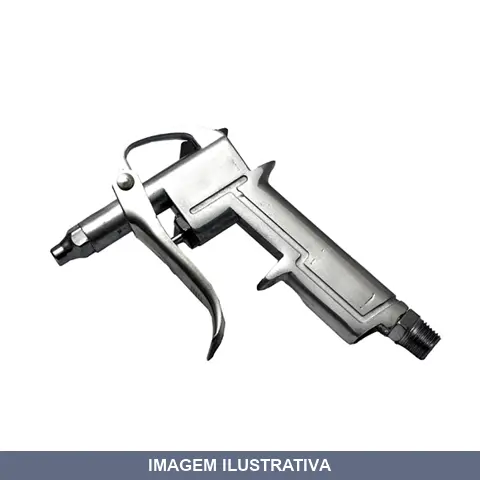
BICO AR LIMPEZA ALUMINIO COM GATILHO DG10 RF
Indicação de Uso: Limpeza de máquinas, bancadas e equipamentos pneumáticos. Material e Resistência: Corpo em alumínio polido, bico em aço niquelado, rosca macho 1/4" NPT, acionamento por gatilho. Vantagem Prática: Permite limpeza precisa e direcionada em áreas de difícil acesso.
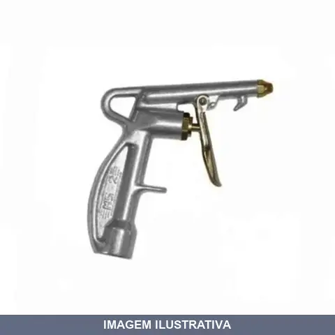
BICO AR LIMPEZA ALUMINIO MS -TL STEULA 2
Indicação de Uso: Limpeza e pulverização de objetos e ferramentas em indústrias, oficinas ou hobby. Material e Resistência: Corpo em alumínio e válvula em latão, com garantia de 100.000 ciclos de acionamento. Vantagem Prática: Acionamento por gatilho ergonômico, facilita acesso a locais de difícil alcance. Rosca de entrada de ar 1/4 BSP.
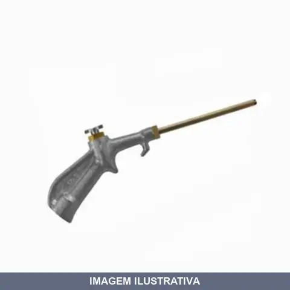
BICO AR LIMPEZA ALUMINIO MS -TL STEULA 4
Bico para limpeza pneumático com corpo em alumínio e válvula em latão. Equipado com tubo longo de 100 mm para acesso a locais difíceis. Entrada de ar 1/4" BSP. Acionamento por botão. Garantia de 100.000 ciclos de funcionamento. Indicado para limpeza de máquinas, equipamentos, fundições, oficinas e indústrias. Compacto e leve.
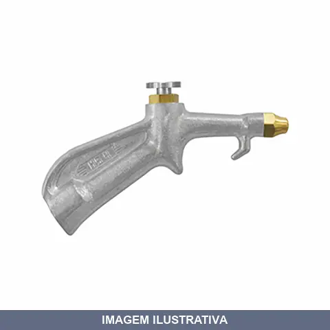
BICO AR LIMPEZA ALUMINIO MS STEULA
BICO PARA LIMPEZA MS 4 Ideal para fundições, oficinas, indústrias e para cabines de caminhões. - Compacto, leve e resistente. - Corpo em alumínio e válvula em latão. - Rosca de entrada de ar = 1/4 NPT
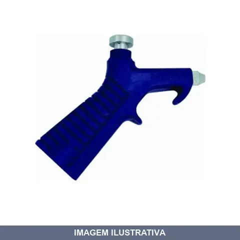
BICO AR LIMPEZA PLASTICO BB02 RF
Bico de ar para limpeza com acionamento por botão. Indicado para limpeza de máquinas, equipamentos e ambientes industriais. Construído em plástico resistente. Rosca fêmea 1/4" NPT. Pressão máxima de trabalho: 150 Lbs. Fornecido em embalagem individual.

BICO AR LIMPEZA PLASTICO COM GATILHO BLMP3 WIMPEL
BLMP - 3 BICO DE LIMPEZA PLASTICO DESCRIÇÃO DO MODELO BLMP-3 Bico para limpeza, plástico.

BICO AR LIMPEZA PLASTICO LOTUS
Pistola de ar para limpeza. Corpo em poliamida preto, com rosca interna em latão. Encaixe de 1/4" NPT fêmea. Pressão de 50 PSI. Comprimento 12cm, bico 50mm. Bico e botão de acionamento em aço inox com gatilho.
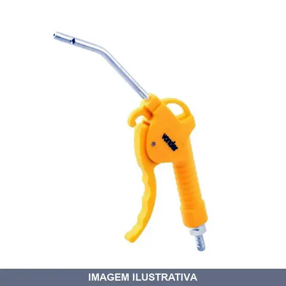
BICO AR LIMPEZA PLASTICO PL VONDER
Indicação de Uso: Limpeza e secagem de peças, máquinas e equipamentos em geral. Material e Resistência: Corpo em plástico. Pressão máxima de trabalho: 87 lbf/pol² (6 bar). Rosca de entrada: 1/4" NPT (fêmea). Vantagem Prática: Gatilho longo e ergonômico que proporciona maior conforto ao operador. Acompanha espigão macho zincado rosca 1/4" para mangueira 1/4".
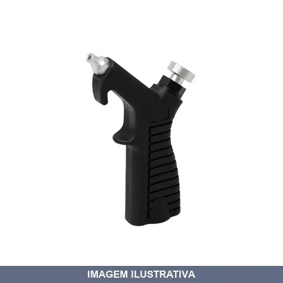
BICO AR LIMPEZA PLASTICO WORKER
Indicação de Uso: Limpeza a ar em postos de combustíveis, oficinas mecânicas e indústrias. Elimina água, querosene e sujeiras em limpeza de peças e montagem de motores. Material e Resistência: Corpo em nylon resistente com bico em alumínio de 2mm. Acionamento por botão. Rosca fêmea 1/4" NPT com pressão máxima de 6 bar.
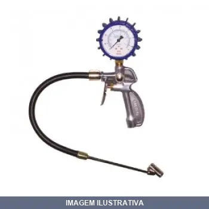
CALIBRADOR COM MANOMETRO COM BICO O A 150SPI MS- -C STEULA
Manômetro analógico com bico para medição de pressão de pneus. Indicado para verificação de pressão em veículos pesados, leves, motos e bicicletas. Instrumento de leitura direta com escala de pressão. Aplicação em oficinas mecânicas, borracharias e garagens.
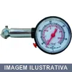
CALIBRADOR COM MANOMETRO LIB CCM TIRE GAUGE RF
Calibrador com manômetro para pneus. Escala de pressão 10 a 60 psi. Corpo em plástico, bico para esvaziar. Portátil e compacto, indicado para oficinas, borracharias e manutenção veicular. Dimensões: 25 x 55 x 102 mm.
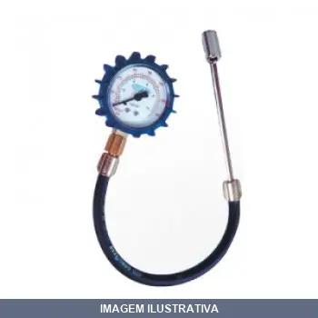
CALIBRADOR COM MANOMETRO O A 200PSI MS -C STEULA
MEDIDOR DE PRESSAO COM BICO DUPLO PARA VEICULOS PESADOS - Ideal para medir pressão de pneus de caminhões, podendo também ser usado com veículos leves. - É uma ótima opção para oficinas mecânicas, borracharias, garagens e empresas de transporte devido ao seu baixo custo. - Adequado também para motoristas que desejam ter ao seu alcance uma ferramenta confiável para verificar a pressão dos pneus de seu próprio veículo. - Instrumento de uso profissional de elevada confiabilidade. - Comprimento da ma
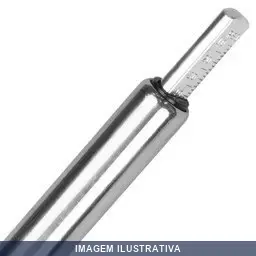
CALIBRADOR DUPLO PROFIS 10A150PSI BC - STEULA
Calibrador duplo profissional com duas escalas de leitura. Indicação de Uso: Aferição de pressão em pneus, sistemas hidráulicos e pneumáticos. Material e Resistência: Cabeçote em zamac, régua de alumínio, corpo de latão cromado. Vantagem Prática: Duas escalas graduadas permitem leitura rápida e precisa em ambos os lados da régua.
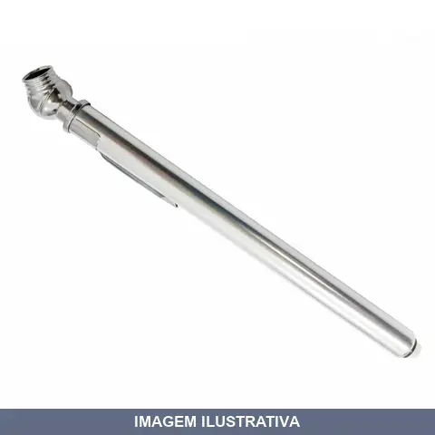
CALIBRADOR LAPIS ALUM/ZINCO CROM ATE 100PSI LOTUS
Calibrador tipo lápis para pneus com corpo em alumínio/zinco cromado. Entrada em ângulo para facilitar visualização. Escala de 0 a 100 PSI. Clip de bolso. Indicado para calibrar pneus de automóveis, caminhões, tratores e bicicletas.
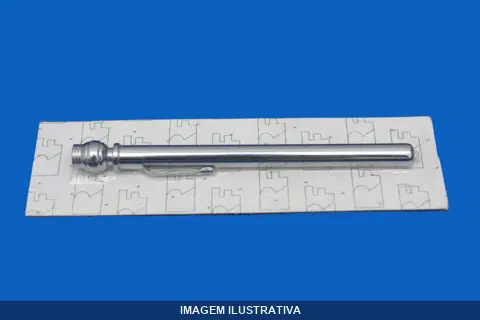
CALIBRADOR LAPISEIRA LBS LUBEFER
Calibrador de pressão tipo lapiseira para pneus, marca Lubefer. Indicado para uso em borracharias e oficinas. Escala de alumínio gravada, prendedor de bolso para transporte, faixa de operação em libras (lbs). Medidor manual de pressão de pneus.
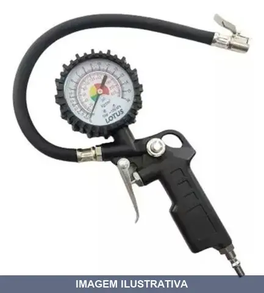
CALIBRADOR PNEUMATICO 220PSI LOTUS
Calibrador pneumático com encaixe de 1/4 polegada, pressão máxima de 220 PSI. Utilizado para ajuste e controle de pressão em sistemas pneumáticos. Indicado para aplicações em ferramentas pneumáticas, compressores e equipamentos que utilizam ar comprimido.
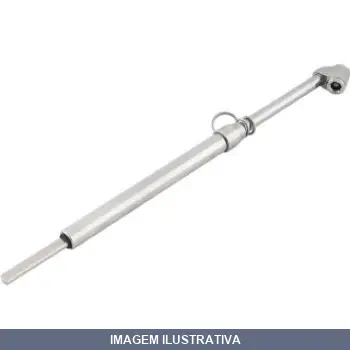
CALIBRADOR PRESSAO ATE VONDER
CALIBRADOR PNEUS PROFISSIONAL 150 LIBRAS VONDER Indicado para verificar a pressão de pneus de veículos. Uso profissional. Faixa de medição lbf/pol² do calibrador de pneu:150 lbf/pol² Faixa de medição kgf/cm² do calibrador de pneu:10,5 kgf/cm²
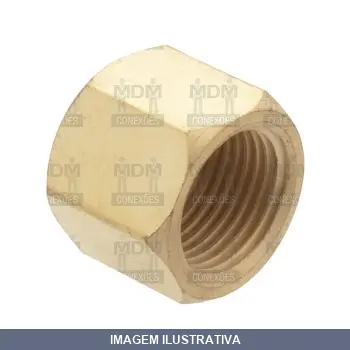
CAP METAL NPT RF RF
Cap de metal para vedação de tubulações com conexão NPT. Indicado para sistemas hidráulicos, pneumáticos e de fluidos em geral. Material metálico garante durabilidade e resistência em aplicações que exigem vedação confiável. Vantagem prática: instalação rápida e vedação segura em linhas pressurizadas.

CONECTOR MACHO COBRE 08XM , MDM
Conector macho tipo compressão para conexão roscada de tubos em sistemas hidráulicos ou pneumáticos. Fabricado em cobre, oferece boa resistência à corrosão. Utilizado em instalações de condução de fluidos ou ar, proporcionando conexão segura e confiável entre tubo e rosca macho.

CONECTOR MACHO COBRE 10XM , MDM
Indicação de Uso: Conector macho para sistemas hidráulicos que requerem acoplamento rápido e seguro. Material e Resistência: Fabricado em latão, oferece resistência à corrosão e suporta aplicações com fluidos sob pressão. Vantagem Prática: Proporciona vedação confiável nas conexões, facilitando montagem e desmontagem.

CONECTOR MACHO COBRE 12XM , MDM
Indicação de Uso: Conector macho para sistemas hidráulicos e pneumáticos de média pressão. Material e Resistência: Latão ou aço, oferecendo resistência mecânica adequada para aplicações de pressão e durabilidade em ambientes de trabalho. Vantagem Prática: Proporciona acoplamento seguro e confiável em linhas de tubulação industrial.

CONECTOR MACHO COBRE MDM
Indicação de Uso: Conector macho com rosca NPT para sistemas hidráulicos e pneumáticos, utilizado em tubulações rígidas e conexões de componentes. Material e Resistência: Fabricado em cobre, oferece resistência à corrosão em ambientes úmidos e durabilidade em pressão moderada. Vantagem Prática: Proporciona vedação confiável em conexões de fluidos sob pressão com encaixe roscado.
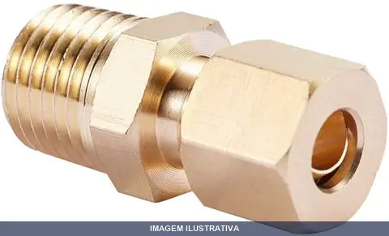
CONECTOR MACHO COBRE X1, MDM
Indicação de Uso: Conexão macho em sistemas de ar comprimido e aplicações hidráulicas. Material e Resistência: Fabricado em cobre, resistente à corrosão. Vantagem Prática: Conector macho com vedação eficiente para instalações de tubulação em ar comprimido.

CONEXAO ENGATE RAPIDO ESPIGAO
Conexão de engate rápido com espigão para sistemas de ar comprimido e fluidos. Facilita acoplamento e desacoplamento rápido de mangueiras e acessórios em aplicações pneumáticas e hidráulicas. Ideal para oficinas, compressores e equipamentos industriais que utilizam conexões padronizadas.
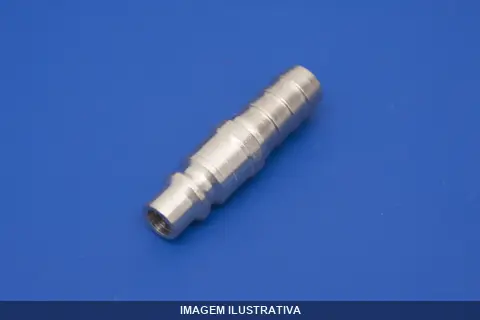
CONEXAO ENGATE RAPIDO ESPIGAO RF241 RF
RF241 - CONECTOR ENGATE 1/2 ESPIGÃO MANGUEIRA 1/2 NPT

CONEXAO ENGATE RAPIDO FEMEA 1/2X 1/2
Indicação de Uso: Conexão rápida fêmea para sistemas de ar comprimido e hidráulica. Material e Resistência: Construída em metal, apropriada para aplicações pneumáticas e hidráulicas. Vantagem Prática: Engate rápido que permite conexão e desconexão sem ferramentas, reduzindo tempo de montagem.

CONEXAO ENGATE RAPIDO FEMEA 1/2X 1/2 215
Indicação de Uso: Conexão rápida para sistemas pneumáticos, hidráulicos, de irrigação e outras aplicações que requerem conexão e desconexão frequente de mangueiras e tubos. Material e Resistência: Fabricado em aço cromado ou chumballoy, com vedação em borracha nitrílica e molas de aço, proporcionando resistência e durabilidade em condições severas. Vantagem Prática: Sistema de engate com travamento por pino rolete que permite conexão rápida e segura, evitando vazamentos e reduzindo tempo nas
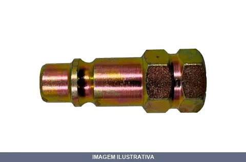
CONEXAO ENGATE RAPIDO FEMEA 1/2X 3/8
Indicação de Uso: Conexão rápida para sistemas de ar comprimido, hidráulica e pneumática. Material e Resistência: Construído em metal para resistir a pressão e uso contínuo. Vantagem Prática: Engate rápido tipo fêmea permite acoplamento e desacoplamento ágil sem ferramentas, facilitando trocas de acessórios.
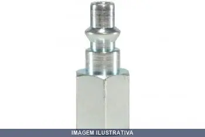
CONEXAO ENGATE RAPIDO FEMEA 1/2X 3/8 214
Indicação de Uso: Conexão rápida para sistemas pneumáticos, hidráulicos, de irrigação e outras aplicações que requerem conexão e desconexão frequente de mangueiras e tubos. Material e Resistência: Fabricado em aço cromado ou chumballoy, com vedação em borracha nitrílica e molas de aço, proporcionando resistência e durabilidade em condições severas. Vantagem Prática: Sistema de engate com travamento por pino rolete que permite conexão rápida e segura, evitando vazamentos e reduzindo tempo nas
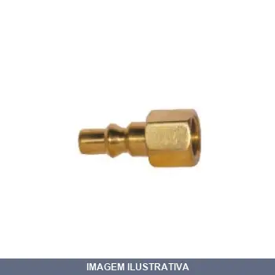
CONEXAO ENGATE RAPIDO FEMEA 1/4X 1/4
PINO ENGATE 1/4 BSP FEMES LATAO - Material : latão - Dimensões : rosca 1/4 BSP fêmea

CONEXAO ENGATE RAPIDO FEMEA 1/4X 1/4 2002
Conexão de engate rápido tipo fêmea para linhas de ar comprimido e fluidos. Permite acoplamento e desacoplamento sem vazamento. Fabricada em metal com rosca NPT. Indicada para sistemas pneumáticos, hidráulicos e de ar comprimido em aplicações industriais, oficinas e equipamentos portáteis.

CONEXAO ENGATE RAPIDO FEMEA 1/4X 1/4 210
RF 210 - CONECTOR ENGATE 1/4 ROSCA FEMEA 1/4 NPT Aço niquelado Passagem de ar 5 mm Intercambiável com fabricantes nacionais Pode ser acoplado com a linha pressurizada
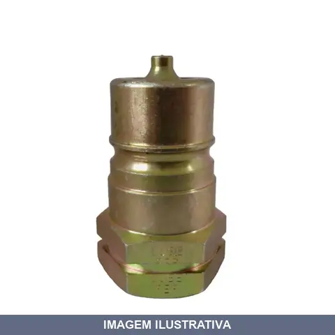
CONEXAO ENGATE RAPIDO FEMEA 1NPT HIDRAULICO LUBEFER
Conexão de engate rápido com rosca fêmea NPT para sistemas hidráulicos. Fabricado em aço com acabamento bicromatizado. Possui válvulas automáticas de ação rápida que bloqueiam o fluxo hidráulico no desacoplamento. Indicado para transferência de fluidos em equipamentos rodoviários, terraplanagem, máquinas agrícolas e sistemas hidráulicos industriais. Fluido recomendado: óleo hidráulico. Atende à norma ISO 7241-1 A.

CONEXAO ENGATE RAPIDO FEMEA 3/8X 3/8 212
Indicação de Uso: Conexão rápida para sistemas pneumáticos, hidráulicos, de irrigação e outras aplicações que requerem conexão e desconexão frequente de mangueiras e tubos. Material e Resistência: Fabricado em aço cromado ou chumballoy, com vedação em borracha nitrílica e molas de aço, proporcionando resistência e durabilidade em condições severas. Vantagem Prática: Sistema de engate com travamento por pino rolete que permite conexão rápida e segura, evitando vazamentos e reduzindo tempo nas

CONEXAO ENGATE RAPIDO FEMEA RF211 RF
Conector para engate rápido com rosca fêmea NPT. Fabricado em aço niquelado com travamento por esferas e vedação de borracha nitrílica. Indicado para sistemas pneumáticos e hidráulicos, proporcionando conexão segura e prática.

CONEXAO ENGATE RAPIDO MACHO 1/2X 1/2
Indicação de Uso: Conexão rápida para sistemas hidráulicos e pneumáticos. Material e Resistência: Construção em metal com acabamento resistente à corrosão. Vantagem Prática: Engate rápido macho que facilita acoplamento e desacoplamento sem ferramentas adicionais, reduzindo tempo de manutenção e reconfiguração de linhas.

CONEXAO ENGATE RAPIDO MACHO 1/2X 1/2 205
Conexão de engate rápido com rosca macho RF para sistemas hidráulicos e pneumáticos. Permite rápida e segura ligação e desligação de mangueiras e tubos sem necessidade de ferramentas. O corpo macho possui haste com ponta cônica e rosca externa que se encaixa no corpo fêmea. Sistema de vedação com válvula de esfera mantém a pressão e evita vazamentos. Compatível com ar comprimido, água e óleo.
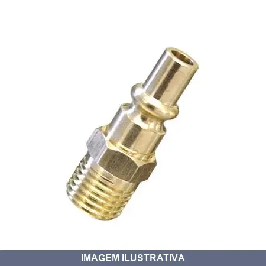
CONEXAO ENGATE RAPIDO MACHO 1/2X 3/8
Indicação de Uso: Conexão rápida para sistemas de ar comprimido e hidráulicos. Material e Resistência: Construído em metal para durabilidade em ambientes de trabalho. Vantagem Prática: Engate rápido que facilita conexões e desconexões sem necessidade de ferramentas, reduzindo tempo de operação.

CONEXAO ENGATE RAPIDO MACHO 1/2X 3/8 204
Conexão de engate rápido com rosca macho RF para sistemas hidráulicos e pneumáticos. Permite rápida e segura ligação e desligação de mangueiras e tubos sem necessidade de ferramentas. O corpo macho possui haste com ponta cônica e rosca externa que se encaixa no corpo fêmea. Sistema de vedação com válvula de esfera mantém a pressão e evita vazamentos. Compatível com ar comprimido, água e óleo.
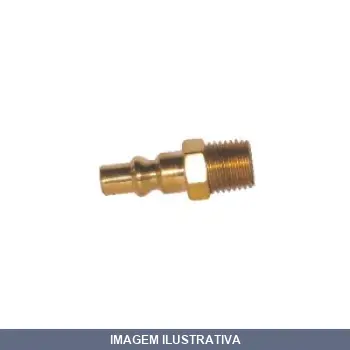
CONEXAO ENGATE RAPIDO MACHO 1/4X 1/4
PINO ENGATE 1/4 BSP MACHO ( LATAO) - Material : latão - Dimensões : rosca 1/4 BSP macho
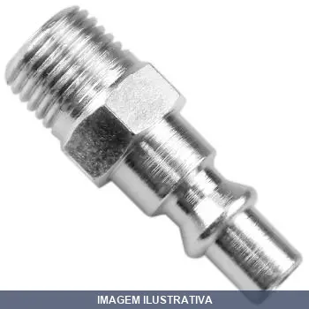
CONEXAO ENGATE RAPIDO MACHO 1/4X 1/4 200
RF 200 - CONECTOR ENGATE 1/4 ROSCA MACHO 1/4 NPT Aço niquelado Passagem de ar 5 mm Intercambiável com fabricantes nacionais Pode ser acoplado com a linha pressurizada

CONEXAO ENGATE RAPIDO MACHO 16MMX RF
Conexão reta com engate rápido para tubo de 16mm. Utilizada em junções de tubos a válvulas pneumáticas, operando com ar comprimido e vácuo. Pressão de trabalho 0 a 8 bar, máxima 10 bar. Corpo em latão niquelado com vedação em resina de teflon. Compatível com tubos de poliuretano, nylon e polietileno.

CONEXAO ENGATE RAPIDO MACHO 3/8X 1/4 201
Conexão de engate rápido com rosca macho RF para sistemas hidráulicos e pneumáticos. Permite rápida e segura ligação e desligação de mangueiras e tubos sem necessidade de ferramentas. O corpo macho possui haste com ponta cônica e rosca externa que se encaixa no corpo fêmea. Sistema de vedação com válvula de esfera mantém a pressão e evita vazamentos. Compatível com ar comprimido, água e óleo.

CONEXAO ENGATE RAPIDO MACHO LUB- LUBEFER
Conexão tipo espigão macho de 1/4" para engate rápido. Utilizado em sistemas pneumáticos para ligações rápidas entre mangueiras e equipamentos. Fabricado em metal resistente com vedação eficiente. Facilita conexões firmes, seguras e sem vazamentos em aplicações de ar comprimido.
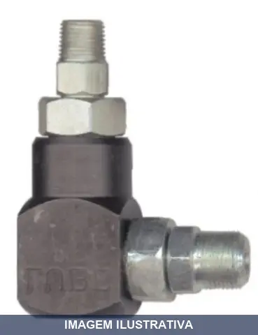
CONEXAO GIRATORIA FORMA L LUBEFER
Indicação de Uso: Conexão giratória para sistemas de lubrificação centralizada com graxa, utilizada em máquinas e equipamentos que requerem flexibilidade de mangueiras. Material e Resistência: Construído em aço forjado, resistente à pressão de lubrificação. Vantagem Prática: Formato L facilita o direcionamento da mangueira e válvula de graxa em espaços reduzidos ou com restrição de acesso.
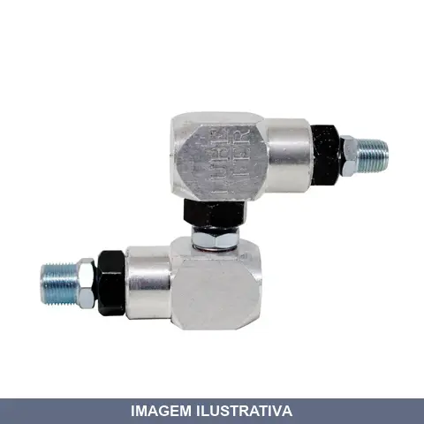
CONEXAO GIRATORIA FORMA Z LUBEFER
Indicação de Uso: Conexão giratória indicada para sistemas hidráulicos e pneumáticos que requerem rotação contínua sem torção de mangueiras ou tubulações. Aplicável em equipamentos industriais, agrícolas e de movimentação de fluidos. Material e Resistência: Construída em metal, projetada para suportar pressão em sistemas de transmissão de fluidos. Vantagem Prática: Permite rotação livre da conexão, evitando desgaste prematuro e enroscamento de mangueiras durante a operação.

CONEXAO METAL RETA MACHO 06MMX NPT CONECFIT 1/2
Conexão metálica reta com rosca macho NPT. Indicada para sistemas hidráulicos e pneumáticos que utilizam tubos de poliuretano ou similares. Material metálico oferece durabilidade e resistência à pressão. Facilita a montagem e desmontagem de linhas de ar e óleo.

CONEXAO METAL RETA MACHO 06MMX NPT CONECFIT 1/4
Conexão metálica reta para unir tubulações e mangueiras em sistemas de ar comprimido, hidráulica e pneumática. Apresenta rosca NPT em um lado e encaixe direto no outro, permitindo conexões práticas entre componentes de diâmetros diferentes. Material metálico proporciona durabilidade em aplicações industriais e prediais.

CONEXAO METAL RETA MACHO 06MMX NPT CONECFIT 1/8
Indicação de Uso: Conexão para sistemas de ar comprimido, hidráulica e pneumática. Material e Resistência: Construída em metal, resistente à pressão e corrosão. Vantagem Prática: Encaixe reto macho facilita conexões seguras e vedadas em tubulações de pequeno diâmetro.

CONEXAO METAL RETA MACHO 06MMX NPT CONECFIT 3/8
Conexão hidráulica de metal com rosca macho reta para aplicação em sistemas de fluidos. Indicada para linhas de pressão em equipamentos pneumáticos e hidráulicos. Material metálico oferece resistência à pressão e durabilidade em ambientes de trabalho industrial.

CONEXAO METAL RETA MACHO 08MMX NPT CONECFIT 1/4
Conexão metálica reta macho com rosca NPT para tubos pneumáticos e hidráulicos. Sistema de compressão rápida e segura. Material em latão niquelado com garra em zinco. Indicada para ar, água e vácuo. Pressão de trabalho de até 28 BAR. Temperatura de operação de -10°C a 80°C. Conforme normas SAE J1131.
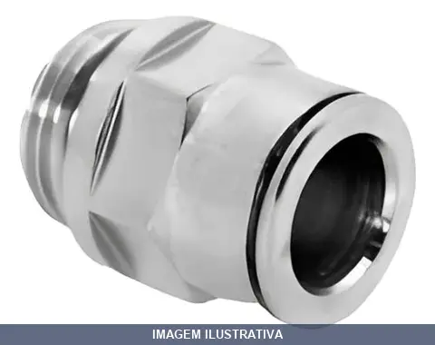
CONEXAO METAL RETA MACHO 08MMX NPT CONECFIT 1/8
Conexão metálica reta macho com rosca NPT para tubos pneumáticos e hidráulicos. Sistema de compressão rápida e segura. Material em latão niquelado com garra em zinco. Indicada para ar, água e vácuo. Pressão de trabalho de até 28 BAR. Temperatura de operação de -10°C a 80°C. Conforme normas SAE J1131.
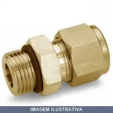
CONEXAO METAL RETA MACHO 08MMX NPT CONECFIT 3/8
Conexão metálica reta macho com rosca NPT para tubos pneumáticos e hidráulicos. Sistema de compressão rápida e segura. Material em latão niquelado com garra em zinco. Indicada para ar, água e vácuo. Pressão de trabalho de até 28 BAR. Temperatura de operação de -10°C a 80°C. Conforme normas SAE J1131.
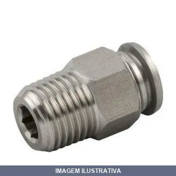
CONEXAO METAL RETA MACHO 10MMX NPT CONECFIT
Conexão pneumática reta macho instantânea para conectar tubos a válvulas ou outros componentes. Corpo em ferro com partes metálicas niqueladas e garra em zinco. Suporta ar comprimido com pressão de trabalho de 8 BAR e temperatura operacional de 0°C a 60°C.
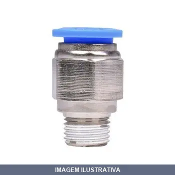
CONEXAO METAL RETA MACHO 12MMX NPT CONECFIT
Conexão reta macho instantânea para tubo de 12mm com rosca NPT. Indicação de Uso: Ligação rápida em sistemas pneumáticos com ar comprimido. Material e Resistência: Corpo em ferro com garra em zinco e anilha plástica; pressão de trabalho de 8 BAR; temperatura de operação de 0 a 60°C. Vantagem Prática: Fixação instantânea tipo push-pull que garante vedação segura sem necessidade de ferramentas.
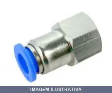
CONEXAO RETA FEMEA 04MMX NPT CONECFIT
Indicação de Uso: Conexão para sistemas de ar comprimido, hidráulica e pneumática. Material e Resistência: Corpo em metal, rosca fêmea NPT, tubo de 4mm. Vantagem Prática: Facilita acoplamento direto em linhas de pequeno diâmetro com vedação por rosca cônica.
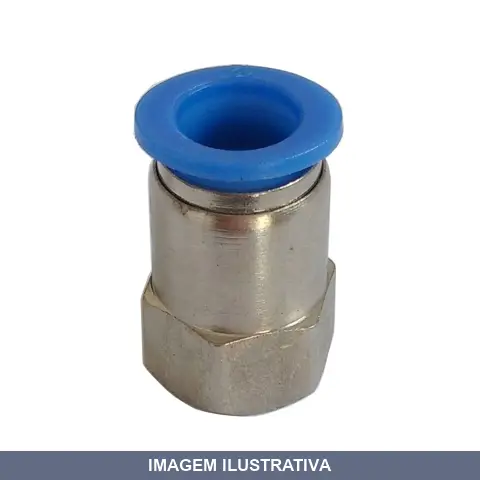
CONEXAO RETA FEMEA 06MMX BSP CONECFIT
Indicação de Uso: Conexão em sistemas hidráulicos e pneumáticos. Material e Resistência: Construção em metal resistente. Vantagem Prática: Permite acoplamento reto fêmea para tubulações e mangueiras, facilitando montagem e desmontagem em linhas de fluidos.

CONEXAO RETA FEMEA 06MMX NPT CONECFIT 1/2
Indicação de Uso: Conexão pneumática para sistemas de ar comprimido e água, utilizada para fixação de tubos em válvulas e componentes pneumáticos. Material e Resistência: Latão niquelado com garra em inox. Pressão de trabalho de 10 BAR, temperatura de operação de 0°C a 60°C. Vantagem Prática: Sistema de encaixe instantâneo que garante vedação rápida e segura sem ferramentas.

CONEXAO RETA FEMEA 06MMX NPT CONECFIT 1/4
Conexão reta fêmea com rosca NPT. Utilizada para conexões de linhas hidráulicas e pneumáticas, permitindo encaixe seguro entre mangueiras e componentes. Facilita montagem e desmontagem de sistemas de ar comprimido e fluidos sob pressão.

CONEXAO RETA FEMEA 06MMX NPT CONECFIT 3/8
Indicação de Uso: Conexão pneumática para sistemas de ar comprimido e água, utilizada para fixação de tubos em válvulas e componentes pneumáticos. Material e Resistência: Latão niquelado com garra em inox. Pressão de trabalho de 10 BAR, temperatura de operação de 0°C a 60°C. Vantagem Prática: Sistema de encaixe instantâneo que garante vedação rápida e segura sem ferramentas.

CONEXAO RETA FEMEA 08MMX NPT CONECFIT 1/2
Conexão instantânea reta fêmea para tubo com rosca NPT. Sistema push-in sem anilhas. Corpo em latão niquelado com garra em aço inox. Pressão de trabalho até 10 bar. Aplicável em sistemas pneumáticos, água e vácuo. Temperatura de operação de 0 a 60°C. Instalação rápida e vedação eficiente.

CONEXAO RETA FEMEA 08MMX NPT CONECFIT 1/4
Conexão reta fêmea com rosca NPT. Utilizada para unir tubulações e mangueiras em sistemas pneumáticos e hidráulicos. Permite conexão segura e estanque entre componentes de diferentes diâmetros. Indicação de Uso: Sistemas de ar comprimido, hidráulica e pneumática / Vantagem Prática: Conexão direta e confiável sem necessidade de adaptadores adicionais.

CONEXAO RETA FEMEA 08MMX NPT CONECFIT 1/8
Conexão instantânea reta fêmea para tubo com rosca NPT. Sistema push-in sem anilhas. Corpo em latão niquelado com garra em aço inox. Pressão de trabalho até 10 bar. Aplicável em sistemas pneumáticos, água e vácuo. Temperatura de operação de 0 a 60°C. Instalação rápida e vedação eficiente.

CONEXAO RETA FEMEA 08MMX NPT CONECFIT 3/8
Conexão instantânea reta fêmea para tubo com rosca NPT. Sistema push-in sem anilhas. Corpo em latão niquelado com garra em aço inox. Pressão de trabalho até 10 bar. Aplicável em sistemas pneumáticos, água e vácuo. Temperatura de operação de 0 a 60°C. Instalação rápida e vedação eficiente.
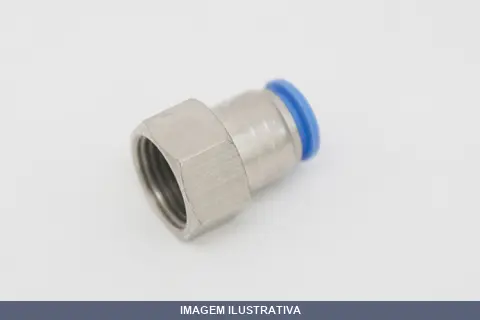
CONEXAO RETA FEMEA 10MMX BSP CONECFIT
Indicação de Uso: Conexão para sistemas hidráulicos e pneumáticos que exigem acoplamento entre tubulações e componentes com rosca BSP. Material e Resistência: Construção em metal resistente à pressão de fluidos. Vantagem Prática: Facilita a montagem e desmontagem em instalações que demandam vedação confiável e rápida troca de componentes.

CONEXAO RETA FEMEA 10MMX NPT CONECFIT 1/2
CONEXAO RETA FEMEA 1/2 X 10 MM NPT NF 121706 VEIO PCF10G04 COMO SENDO NPT

CONEXAO RETA FEMEA 10MMX NPT CONECFIT 1/4
Conexão reta fêmea com rosca NPT. Indicação de Uso: União de tubulações e mangueiras em sistemas hidráulicos e pneumáticos / Material e Resistência: Metal resistente à pressão / Vantagem Prática: Permite acoplamento seguro e vedação eficaz em instalações de ar comprimido e fluidos.

CONEXAO RETA FEMEA 10MMX NPT CONECFIT 1/8
Indicação de Uso: Conexão hidráulica ou pneumática em sistemas que requerem acoplamento reto entre mangueiras e componentes. Material e Resistência: Construção em metal para aplicações sob pressão. Vantagem Prática: Facilita a montagem e desmontagem em instalações de hidráulica e pneumática.

CONEXAO RETA FEMEA 10MMX NPT CONECFIT 3/8
Conexão reta fêmea com rosca NPT. Utilizada para unir tubos e mangueiras hidráulicas e pneumáticas em sistemas de fluidos sob pressão. Permite conexão estanque entre componentes de diferentes diâmetros. Instalação simples por encaixe e aperto manual ou com chave.

CONEXAO RETA FEMEA 12MMX NPT CONECFIT
Indicação de Uso: Conexão para sistemas hidráulicos e pneumáticos. Material e Resistência: Construída em metal, apropriada para ambientes que exigem vedação confiável. Vantagem Prática: Encaixe reto facilita instalação em linhas de tubulação com rosca NPT, permitindo conexão entre mangueiras e componentes hidráulicos.

CONEXAO RETA MACHO 04MMX M5 ROSCA CONECFIT
Indicação de Uso: Conexão para sistemas de ar comprimido, hidráulica ou pneumática. Material e Resistência: Construção em metal resistente. Vantagem Prática: Conexão macho reta que facilita acoplamento direto em linhas e equipamentos com rosca, proporcionando vedação segura.

CONEXAO RETA MACHO 04MMX NPT CONECFIT 1/4
Indicação de Uso: Conexão para sistemas de ar comprimido, hidráulica e pneumática. Material e Resistência: Construção em metal resistente à pressão. Vantagem Prática: Rosca NPT padrão facilita acoplamento com tubulações e equipamentos convencionais.

CONEXAO RETA MACHO 04MMX NPT CONECFIT 1/8
Conexão reta macho com rosca NPT. Indicada para sistemas de ar comprimido, hidráulica e pneumática. Facilita a junção de tubos e mangueiras em instalações industriais e aplicações gerais. Permite conexões rápidas e diretas entre componentes.
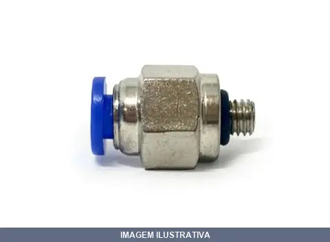
CONEXAO RETA MACHO 04MMX NPT CONECFIT 3/8
Indicação de Uso: Conexão para sistemas de ar comprimido, hidráulica e pneumática. Material e Resistência: Construção em metal, apropriada para trabalho sob pressão. Vantagem Prática: Permite união entre mangueiras e componentes com diferentes tipos de encaixe, facilitando montagem e desmontagem de linhas.

CONEXAO RETA MACHO 06MMX NPT CONECFIT 1/2
Conexão reta macho para tubulações. Indicação de Uso: Sistemas de ar comprimido, hidráulica e pneumática. Material e Resistência: Construção em metal com rosca NPT, adequada para conexões sob pressão. Vantagem Prática: Permite emendas diretas entre mangueiras e componentes de sistemas pressurizados, facilitando montagem e desmontagem.

CONEXAO RETA MACHO 06MMX NPT CONECFIT 1/4
Conexão reta macho com rosca NPT. Indicada para sistemas de ar comprimido, hidráulica e pneumática. Permite unir mangueiras e tubos de diferentes diâmetros de forma segura e sem vazamentos.

CONEXAO RETA MACHO 06MMX NPT CONECFIT 1/8
Indicação de Uso: Conexão para sistemas de ar comprimido, hidráulica e pneumática. Material e Resistência: Construído em metal, adequado para aplicações industriais e de manutenção. Vantagem Prática: Encaixe reto macho facilita instalação rápida e vedação segura em linhas de pressão.

CONEXAO RETA MACHO 06MMX NPT CONECFIT 3/8
Indicação de Uso: Conexão reta para sistemas hidráulicos e pneumáticos. Material e Resistência: Construção em metal resistente à pressão. Vantagem Prática: Facilita a união de mangueiras e tubulações com rosca NPT em aplicações de fluidos pressurizado.
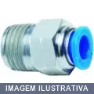
CONEXAO RETA MACHO 06MMXM5 ROSCA CONECFIT
Indicação de Uso: Conexão reta para sistemas pneumáticos, conectando tubulações e mangueiras com rosca métrica. Material e Resistência: Construído em metal resistente à pressão. Vantagem Prática: Facilita acoplamento e desacoplamento rápido entre componentes de circuitos pneumáticos.

CONEXAO RETA MACHO 06MMXM6 ROSCA CONECFIT
Indicação de Uso: Conexão para sistemas de ar comprimido, hidráulica e pneumática. Material e Resistência: Construção em metal com rosca macho, apropriada para ambientes industriais e de serviço. Vantagem Prática: Reta com encaixe direto, facilita instalação e manutenção em linhas de pressão.

CONEXAO RETA MACHO 08MMX NPT CONECFIT
Conexão reta macho para sistemas de ar comprimido, hidráulicos e pneumáticos. Rosca NPT permite vedação direta sem necessidade de fita veda-rosca. Facilita montagem e desmontagem de componentes em linhas de pressão.
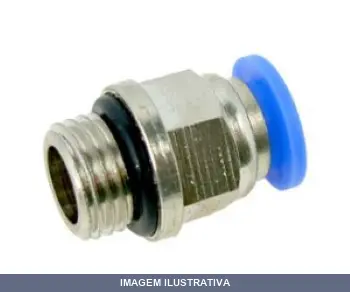
CONEXAO RETA MACHO 10MMX NPT CONECFIT
Indicação de Uso: Conexão reta para sistemas de ar comprimido, hidráulica e pneumática. Material e Resistência: Construção em metal com rosca NPT, adequada para trabalho sob pressão. Vantagem Prática: Conexão direta macho facilita acoplamento em componentes e mangueiras com rosca fêmea.
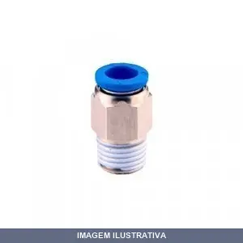
CONEXAO RETA MACHO 12MMX NPT CONECFIT
Conexão reta macho para instalações hidráulicas e pneumáticas. Permite unir tubulações de diferentes tipos de encaixe. Indicada para sistemas de ar comprimido, água e aplicações industriais em geral. Facilita conexões rápidas e seguras em linhas de pressão.
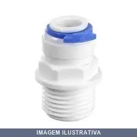
CONEXAO RETA MACHO BSP BRANCA SC1/ - RF
SC1/4-02- CONEXAO MACHO RETO PARA AGUA TUBO 1/4'' X 1/4'' BSP

CONEXAO RETA MACHO NPT CONECFIT
Conexão instantânea reta macho com rosca NPT. Material em latão niquelado com garra em aço inox e componentes em plástico. Pressão de trabalho de 10 BAR, adequada para ar e água. Temperatura de operação entre 0°C a 60°C.
CONJUNTO LUBREFI L COPO SEM PROTECAO CONECFIT
Lubrificador para sistema de preparação de ar comprimido. Copo sem proteção com conexão tipo conecfit. Indicação de Uso: lubrificação de ferramentas pneumáticas e equipamentos de ar comprimido. Vantagem Prática: mantém a lubrificação contínua do sistema, prolongando a vida útil dos componentes pneumáticos.
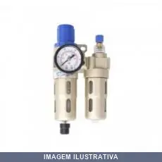
CONJUNTO LUBREFIL COPO COM PROTECAO CONECFIT
CONJ PREP AR 1/4 CPTO NEW COPO COM PROTEÇÃO NF 118866: BFC2000-B CONJ PREPARAÇÃO DE AR MEDIA 1/4 BRANCO
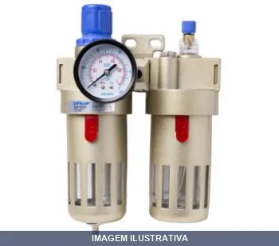
CONJUNTO LUBREFIL COPO DE PROTECAO CONECFIT
Indicação de Uso: Lubrificação e manutenção de sistemas pneumáticos e hidráulicos. / Material e Resistência: Copo de proteção em material resistente a impactos. / Vantagem Prática: Facilita a aplicação de lubrificante com proteção contra respingos e contaminação.
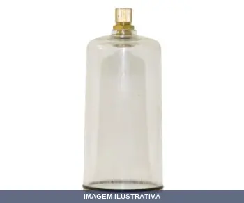
COPO PARA FILTRO MEDIO CONECFIT
Copo para filtro de ar. Componente destinado à retenção e proteção do elemento filtrante em sistemas de filtragem de ar. Uso em equipamentos e máquinas que necessitam filtração de ar. Facilita a manutenção e troca do filtro.

COTOVELO MACHO COBRE 06MMX MDM
Indicação de Uso: Conexão de tubulações em sistemas hidráulicos e de água, unindo tubos em ângulo de 90 graus. Material e Resistência: Fabricado em cobre, oferece resistência à corrosão e durabilidade. Vantagem Prática: Conexão angular que facilita mudanças de direção em encanamentos com acabamento duradouro.

COTOVELO MACHO COBRE 08MMX MDM
Indicação de Uso: Conexão de tubulações em sistemas hidráulicos, de gás e água. Material e Resistência: Fabricado em cobre, material resistente à corrosão e adequado para condução de fluidos. Vantagem Prática: Permite mudança de direção do fluxo em ângulo reto, com conexão macho para acoplamento em tubos e peças hidráulicas.

COTOVELO MACHO COBRE 08MMXM16 CONEC.RAP.PARA FREIO MDM
Indicação de Uso: Conexão rápida para sistemas de freio pneumático e hidráulico, condução de ar comprimido e água em veículos. / Material e Resistência: Cobre, pressão de trabalho até 400 PSI (28 bar). / Vantagem Prática: Conexão macho facilitada com desconexão rápida para manutenção e reparo de sistemas de freio.

COTOVELO MACHO COBRE 10MMXM , MDM
Cotovelo macho de cobre para conexões hidráulicas e de água. Indicado para sistemas de encanamento, refrigeração e instalações que requeiram mudança de direção de tubulações. Material em cobre oferece resistência à corrosão e durabilidade em aplicações com fluidos. Facilita o direcionamento de tubos em ângulo reto com conexão macho.
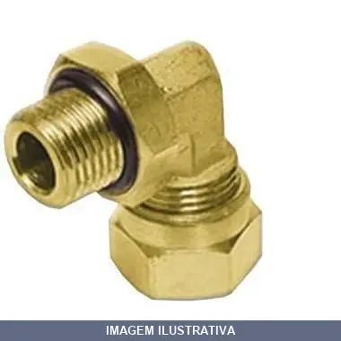
COTOVELO MACHO COBRE 10MMXM16 CONEC.RAP.PARA FREIO MDM
Indicação de Uso: Conexão rápida para sistemas de freio em tubulações. Material e Resistência: Cobre. Vantagem Prática: Facilita a montagem e desmontagem pela conexão rápida.
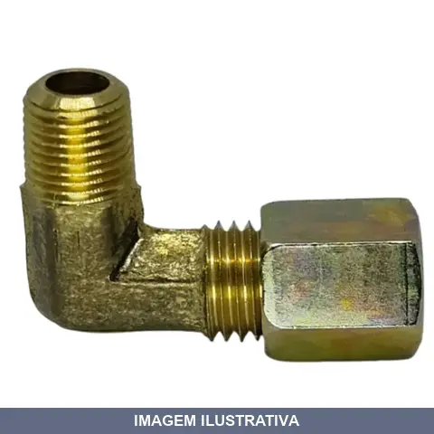
COTOVELO MACHO COBRE 12MMXM16 MDM
Indicação de Uso: Conexão hidráulica e pneumática por compressão para unificação e desvio de tubagens em sistemas diversos. Adequado para tubos de cobre, nylon, alumínio e aço. Material e Resistência: Confeccionado em latão com porca de compressão, suporta pressão máxima de trabalho de 28 bar. Vantagem Prática: Proporciona vedação confiável e fácil montagem em instalações de ar comprimido, água e óleos minerais.

COTOVELO MACHO COBRE TUBO NPT ROSCA MDM
Cotovelo macho de cobre para sistemas hidráulicos e de ar comprimido. Conexão rosqueada NPT. Aplicável em instalações de tubulação onde há necessidade de mudança de direção do fluxo. Material em cobre garante resistência à corrosão em ambientes úmidos.
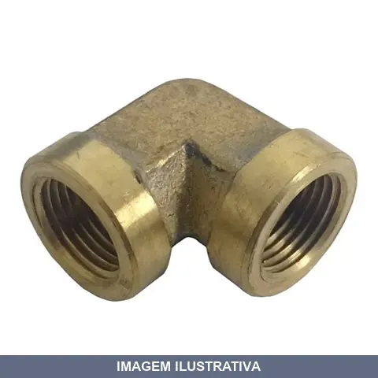
COTOVELO METAL FEMEA/FEMEA M , MDM
Indicação de Uso: Conexão de tubulações e mangueiras em sistemas hidráulicos e pneumáticos. Material e Resistência: Corpo em metal, oferece durabilidade em aplicações industriais. Vantagem Prática: Conexão fêmea em ambas as extremidades para encaixes diretos entre componentes.

COTOVELO METAL FEMEA/FEMEA NPT RF700 RF
Cotovelo 90° com duas roscas fêmea NPT. Estrutura em metal com rosca padrão NPT que oferece vedação confiável. Aplicação em sistemas hidráulicos, pneumáticos e condução de fluídos diversos, como ar, óleo e água. Encaixe versátil para tubos de cobre, nylon e alumínio.

COTOVELO METAL FEMEA/FEMEA NPT RF701 RF
Indicação de Uso: Conexão de tubulações e mangueiras em sistemas hidráulicos e pneumáticos. Material e Resistência: Construído em metal para resistir a pressão. Vantagem Prática: Permite conexão entre duas mangueiras fêmea sem necessidade de adaptadores adicionais.
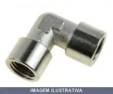
COTOVELO METAL FEMEA/FEMEA NPT RF742 RF
Cotovelo de 90° com duas roscas fêmea NPT. Propicia mudança de direção em instalações hidráulicas e pneumáticas. Rosca padrão NPT garante vedação confiável em sistemas de condução de fluidos e gases.

COTOVELO METAL MACHO 06MMX NPT CONECFIT
Cotovelo de conexão macho em metal, rosca NPT (National Pipe Thread). Indicação de Uso: conexão de tubulações e mangueiras em sistemas hidráulicos e pneumáticos. Material e Resistência: metal resistente à corrosão. Vantagem Prática: vedação eficiente e durável em aplicações de alta pressão.

COTOVELO METAL MACHO 08MMX NPT CONECFIT
Indicação de Uso: Conexão de tubulações e mangueiras em sistemas de ar comprimido, hidráulica, pneumática e utilidades gerais. Material e Resistência: Construído em metal para durabilidade e resistência à pressão. Vantagem Prática: Conexão angular macho facilita mudança de direção em tubulações com economia de espaço.
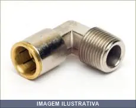
COTOVELO METAL MACHO 10MMX NPT CONECFIT
Cotovelo metálico com rosca macho NPT, utilizado em conexões de tubulações hidráulicas e pneumáticas. Material metálico garante resistência à pressão. Facilita mudanças de direção em sistemas de ar comprimido e fluidos sob pressão.

COTOVELO METAL MACHO 12MMX NPT CONECFIT
Conexão pneumática instantânea tipo cotovelo macho com rosca NPT. Sistema PUSH IN sem anilhas. Material em ferro com garra em zinco. Adequado para ar comprimido. Pressão de trabalho 8 BAR, pressão máxima 10 BAR. Temperatura de operação 0-60°C. Aplicável em sistemas pneumáticos para tubos e mangueiras.
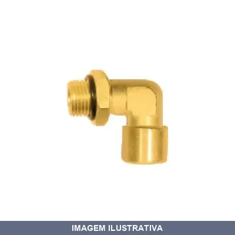
COTOVELO METAL MACHO/FEMEA M , COM CONTRA PORCA MDM
Cotovelo metálico com conexão macho/fêmea para sistemas de hidráulica e pneumática. Inclui contra porca para fixação segura. Indicado para tubulações que exigem mudança de direção com vedação confiável em aplicações de pressão.

COTOVELO METAL MACHO/FEMEA M , MDM
Indicação de Uso: Conexão de tubulações e mangueiras em sistemas hidráulicos e pneumáticos. Material e Resistência: Metal com rosca, apropriado para aplicações sob pressão. Vantagem Prática: Permite conexão angular entre tubos, facilitando o direcionamento de fluxo em espaços restritos.
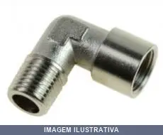
COTOVELO METAL MACHO/FEMEA NPT RF720 RF
Cotovelo 90º conexão giratória macho x fêmea para ar com corpo em alumínio e rosca de aço niquelado NPT. Indicado para aplicações pneumáticas. Rosca niquelada para maior durabilidade e vedação segura em sistemas de ar comprimido.

COTOVELO METAL MACHO/FEMEA NPT RF721 RF
Cotovelo 90° com rosca macho e fêmea NPT em latão. Utilizado em sistemas hidráulicos, pneumáticos e industriais para mudança de direção de tubulações. Material latão propicia resistência à corrosão e durabilidade. Roscas NPT garantem vedação segura em aplicações com fluidos e gases.

COTOVELO METAL MACHO/FEMEA NPT RF722 RF
Cotovelo 90° em metal com conexões macho e fêmea em rosca NPT. Proporciona mudança de direção em sistemas de tubulação. Roscas NPT garantem vedação segura e encaixe eficiente. Adequado para aplicações em sistemas hidráulicos, pneumáticos e linhas de fluidos.
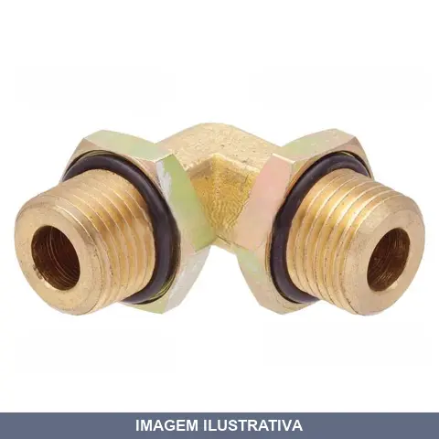
COTOVELO METAL MACHO/MACHO M , MDM
Cotovelo metálico com conexões macho em ambas as extremidades, destinado a sistemas de encanamento e hidráulica. Permite mudança de direção em tubulações com ângulo de 90 graus. Material metálico oferece resistência para aplicações em pressão.
COTOVELO METAL MACHO/MACHO NPT RF RF
Indicação de Uso: Conexão de tubulações e mangueiras em sistemas hidráulicos e pneumáticos, permitindo mudança de direção do fluxo em ângulo de 90°. Material e Resistência: Corpo em metal, roscas macho NPT para vedação e conexão direta sem adaptadores. Vantagem Prática: Facilita o encaminhamento de tubos em espaços com limitação de espaço e reduz a quantidade de conexões necessárias.
COTOVELO PVC FEMEA 06MMX NPT CONECFIT
Indicação de Uso: Conexão em sistemas de hidráulica, pneumática e instalações com fluidos em geral. Material e Resistência: Fabricado em PVC, oferecendo resistência química e durabilidade em aplicações com água e soluções aquosas. Vantagem Prática: Conexão fêmea facilita acoplamento direto em tubulações e equipamentos com roscas NPT compatíveis.

COTOVELO PVC FEMEA 08MMX NPT CONECFIT
Cotovelo em PVC com rosca fêmea NPT para conexão hidráulica e pneumática. Indicado para mudança de direção de fluxo em tubulações de água, ar comprimido e fluidos diversos. Material resistente à corrosão e compatível com sistemas de baixa pressão.

COTOVELO PVC FEMEA 10MMX NPT CONECFIT
Indicação de Uso: Conexão de tubulações em sistemas hidráulicos e pneumáticos. Material e Resistência: PVC, resistente a pressão de trabalho típica de aplicações com fluidos. Vantagem Prática: Conexão de fêmea permite acoplamento direto a tubos e mangueiras, facilita montagem e desmontagem em manutenções.
COTOVELO PVC MACHO 04MMX NPT CONECFIT
Indicação de Uso: Conexão em sistemas pneumáticos e aplicações de ar comprimido que requerem mudança de direção de fluxo. Material e Resistência: PVC de alta resistência adequado para pressões pneumáticas. Vantagem Prática: Encaixe rápido com vedação segura, facilitando instalações e manutenções em linhas de ar comprimido.
COTOVELO PVC MACHO 06MMX NPT CONECFIT
Indicação de Uso: Conexão de tubulações em sistemas de ar comprimido, hidráulica e pneumática. Material e Resistência: PVC, resistente a pressões moderadas e ambientes internos. Vantagem Prática: Conexão angular com rosca macho NPT, facilita mudança de direção em instalações com espaço limitado.

COTOVELO PVC MACHO 08MMX NPT CONECFIT
Indicação de Uso: Conexão de tubulações em sistemas de hidráulica e pneumática. Material e Resistência: PVC, resistente a pressão. Vantagem Prática: Conexão macho facilita acoplamento direto em componentes com rosca fêmea NPT.
COTOVELO PVC MACHO 10MMX NPT CONECFIT
Joelho adaptador em PVC com conexão macho rosqueada e entrada para encaixe. Indicado para sistemas de ar comprimido e água em baixa pressão. Permite mudança de direção de fluxo em tubulações. Material resistente a corrosão, adequado para instalações prediais e industriais leves.

COTOVELO PVC MACHO 12MMX NPT CONECFIT
Indicação de Uso: Conexão de tubulações em sistemas de água, ar comprimido e fluidos em geral. Material e Resistência: Fabricado em PVC, resistente à corrosão e produtos químicos. Vantagem Prática: Facilita mudança de direção em tubulações com conexão macho rosqueada.

COTOVELO PVC MACHO NPT CONECFIT
Conexão instantânea para sistemas pneumáticos. Rosca NPT (cônica) com conexão macho. Pressão de trabalho de 8 BAR. Material: ferro, plástico e garra em zinco. Temperatura de trabalho de 0 a 60°C. Adequado para aplicações com ar comprimido.

COTOVELO PVC MACHO X M5 CURTO CONECFIT
Indicação de Uso: Conexão de tubulações em sistemas hidráulicos e pneumáticos. Material e Resistência: PVC, resistente a pressão e fluidos. Vantagem Prática: Conexão rápida com encaixe macho e rosca, facilita instalação e desmontagem em linhas de trabalho.
COTOVELO PVC MACHO X M5 LONGO CONECFIT
Indicação de Uso: Conexão de tubulações em sistemas hidráulicos e pneumáticos, permitindo mudança de direção do fluxo em ângulo de 90°. Material e Resistência: Fabricado em metal niquelado com trava plástica, resistente a pressão e temperatura adequadas para aplicações em água e ar comprimido. Vantagem Prática: Conexão tipo macho com rosca M5 facilita acoplamento direto em componentes compatíveis, reduzindo necessidade de adaptadores adicionais.

COTOVELO PVC MACHO X M5 ROSCA CONECFIT
Indicação de Uso: Conexão e mudança de direção em tubulações de ar comprimido em sistemas pneumáticos. Material e Resistência: Fabricado em PVC, resistente à corrosão e à umidade. Vantagem Prática: Conexão macho com rosca facilita acoplamento direto em pontos de derivação pneumática.
DRENO GRANDE EM LATAO PARA COMP NPT LUBEFER
Acessório para compressores de ar. Dreno em latão indicado para extrair manualmente o condensado do reservatório ou sistema de ar comprimido. Rosca padrão 1/4" NPT. Fabricado em latão, oferecendo durabilidade e resistência em aplicações pneumáticas.
DRENO VALVULA M , MDM
Dreno com válvula rosqueável para sistemas de ar comprimido e hidráulicos. Permite drenagem de condensado e umidade acumulados em linhas, com fechamento por válvula que evita refluxo. Facilita manutenção preventiva de compressores e equipamentos pneumáticos.
ENGATE RAPIDO AUTOMOTIVO FEMEA 131T ANTIGO RF
RF131T ENGATE RAPIDO COM TRAVA 1/2 ROSCA FEMEA 1/2 NPT 1/2" NPT ANTIGO Aço niquelado Travamento: 6 esferas Vedação: Borracha nitrílica Pressão máxima de trabalho 200 libras Temperatura de trabalho -40 a 120°C

ENGATE RAPIDO ESFERA ESPIGAO 106E RF
RF106E - ENGATE RAPIDO 1/4 ESFERA ESPIGAO MANGUEIRA 1/4 NPT

ENGATE RAPIDO ESFERA ESPIGAO 107E RF
RF 107E - ENGATE RAPIDO 1/4 ESFERA ESPIGAO MANGUEIRA 5/16 NPT
ENGATE RAPIDO ESFERA ESPIGAO 108E RF
RF108E - ENGATE RAPIDO 1/4 ESFERA ESPIGAO MANGUEIRA 3/8 NPT Aço niquelado Travamento 6 esferas - melhor centralização do conector Vedação Borracha Nitrílica Intercambiável com fabricantes nacionais Pressão máxima de trabalho 120 libras

ENGATE RAPIDO ESFERA FEMEA 100E RF
RF100E- ENGATE RAPIDO 1/4 ESFERA ROSCA FEMEA 1/4 NPT

ENGATE RAPIDO ESFERA FEMEA 101E RF
RF101E - ENGATE RAPIDO 1/4 ESFERA ROSCA FEMA 3/8 NPT

ENGATE RAPIDO ESFERA MACHO 103E RF
RF103E - ENGATE RAPIDO 1/4 ESFERA ROSCA MACHO 1/4 NPT

ENGATE RAPIDO INDUSTRIAL FEMEA 131E RF
RF131E - ENGATE RAPIDO 1/2 COM ESFERA ROSCA FEMEA 1/2 NPT
ENGATE RAPIDO INDUSTRIAL MACHO 133E RF
RF133E - ENGATE RAPIDO 1/2 COM ESFERA ROSCA MACHO 1/2 NPT
ENGATE RAPIDO ROLETE ENTRADA PARA TUBO STEULA
ENGATE RAPIDO ENTRADA PARA TUBO 8 X 6 Dados Técnicos - Para uso com ar comprimido. Adequado para uso em RODOAR ® - Entrada para tubo 8,0 x 6,0 - Pressão máxima de trabalho = 175 PSI - Vazão de 9,2 litros/segundo sob pressão de 7 kgf / cm2 - Acionamento suave e elevada durabilidade - Material dos componentes: corpo e capa em zamac, mola de aço inox, borracha nitrílica

ENGATE RAPIDO ROLETE FEMEA LUB- LUBEFER
Indicação de Uso: Conector para transferência de ar, gases, líquidos, sistemas de ar-comprimido, equipamentos de pintura, lubrificação, bicos para pneus, pulverizadores e ferramentas pneumáticas. Material e Resistência: Fabricado em latão com acabamento cromado. Rosca fêmea 1/4" NPT. Pressão máxima de trabalho 250 lbs/pol² (16 bar). Vazão 0,96 Nm³/min. Vantagem Prática: Acoplamento rápido sem necessidade de ferramentas, permitindo conexão e desconexão ágil de mangueiras.
ENGATE RAPIDO ROLETE FEMEA LUB-2000C LUBEFER
Indicação de Uso: Engate rápido com rolete para sistemas pneumáticos, recomendado para tubos de Poliuretano (TPU) ou Nylon para condução de ar comprimido, vácuo e água. Permite conexão e desconexão rápida sem ferramentas. Material e Resistência: Fabricado em latão com acabamento cromado, oferecendo resistência à corrosão e contaminação. Vantagem Prática: Permite acoplar e desacoplar diferentes ferramentas e mangueiras em segundos, tornando o trabalho mais ágil e adaptável.

ENGATE RAPIDO ROLETE FEMEA LUB-2000I LUBEFER
Engate rápido com rolete de 1/4" para rosca fêmea 1/2" BSP. Fabricado em latão com acabamento cromado. Resistência: pressão máxima de trabalho 250 lbs/pol² (16 bar). Indicado para sistemas de ar-comprimido, equipamentos de pintura, lubrificação, ferramentas pneumáticas e transferência de ar, gases e líquidos. Conexão sem necessidade de ferramentas.
ENGATE RAPIDO ROLETE FEMEA ZINCADO VONDER
ENGATE RAPIDO FEMEA 1/4 X 1/4 ROLETE VONDER Indicado para conexão rápida em redes de ar comprimido Fabricado em aço carbono zincado, proporcionando boa resistência à oxidação/corrosão
ENGATE RAPIDO ROLETE MACHO 104R RF
Indicação de Uso: Engate rápido para sistemas hidráulicos e pneumáticos, permitindo conexão e desconexão sem vazamento. Material e Resistência: Construído em metal resistente, suporta pressão de sistemas fluidos. Vantagem Prática: Facilita montagem e desmontagem rápida de mangueiras e tubulações.

ENGATE RAPIDO ROLETE MACHO LUB- LUBEFER
Indicação de Uso: Conexão de mangueiras e ferramentas pneumáticas em sistemas de ar comprimido, linhas de pintura e lubrificação. Material e Resistência: Fabricado em latão com acabamento cromado, com sistema de rolete que proporciona travamento seguro e vedação eficiente. Vantagem Prática: Permite acoplamento e desacoplamento rápido sem necessidade de ferramentas, facilitando a troca de equipamentos pneumáticos.
ENGATE RAPIDO ROLETE MACHO LUB-2000B LUBEFER
Engate rápido de rolete com rosca macho NPT para sistemas pneumáticos. Corpo fabricado em latão com acabamento cromado, oferece resistência à corrosão. Conexão prática e segura sem necessidade de ferramentas, ideal para ar comprimido, ferramentas pneumáticas e aplicações em sistemas pneumáticos diversos.

ENGATE RAPIDO ROLETE MACHO LUB-2000D LUBEFER
Engate rápido para ar comprimido com rolete, tipo macho NPT. Fabricado em latão com acabamento cromado. Utilizado em sistemas de ar-comprimido, equipamentos de pintura, lubrificação, bicos de ar, pulverizadores e ferramentas pneumáticas. Conexão prática e segura sem necessidade de ferramentas.
ENGATE RAPIDO VONDER
ENGATE RAPIDO 1/2'' PASSAGEM LIVRE VONDER Indicado para uso em mangueiras Fabricado em plástico ABS de alta resistência
ESP CRUZ MACHO NPT ESPIGAO DUAS SAIDAS
Indicação de Uso: Conexão para mangueiras em sistemas pneumáticos e hidráulicos, adaptações e manutenção. Material e Resistência: Fabricado em latão com rosca macho NPT. Vantagem Prática: Duas espigões para acoplamento de mangueira e corpo sextavado para facilitar o aperto com chave.
ESP CRUZ MACHO NPT ESPIGAO TRES SAIDAS LUBEF
Indicação de Uso: Conexão de tubulações em sistemas hidráulicos e pneumáticos com três saídas. Material e Resistência: Construído em latão com resistência adequada para aplicações de média pressão. Vantagem Prática: Permite distribuição de fluxo em três direções, facilitando ramificações de linha em instalações.

ESP CRUZ MACHO NPT ESPIGAO TRES SAIDAS LUBEFER
Indicação de Uso: Distribuição e direcionamento de fluxo em sistemas hidráulicos e pneumáticos com três saídas. Material e Resistência: Construído em metal, apropriado para aplicações em linhas de pressão. Vantagem Prática: Permite conexão de múltiplos componentes em uma única peça, reduzindo emendas no circuito.
ESP FIXO MACHO NP ESPIGAO COM LUVA PARA MANGUEIRA LAVA AUTO
Indicação de Uso: Conexão em mangueiras para lavadoras de alta pressão e serviços de lavagem pesada. Material e Resistência: Fabricado em aço, com rosca macho NPT e espigão para acoplamento direto em mangueira. Inclui canal para fixação com abraçadeira. Vantagem Prática: Permite conexão rápida e segura em sistemas de lava jato, com retenção garantida pela abraçadeira de fixação.
ESP FIXO MACHO NPT ESPIGAO COM CANAL LUBEFER
ESPIGÃO PARA LAVAGEM 1/2 COM CANAL AÇO RF 420 - ESPIGAO COM CANAL MANGUEIRA 1/2 X ROSCA MACHO 1/2 NPT AÇO NIQUELADO

ESP FIXO METAL FEMEA BSP ESPIGAO LUBEFER 1/2 1/2
Espigão fixo com rosca fêmea BSP em metal, desenvolvido para conexão rígida e segura de mangueiras flexíveis. Fabricado em latão ou aço conforme a medida. Indicado para sistemas pneumáticos, hidráulicos e de água. Corpo compacto com ponta tipo espigão para ancoragem interna na mangueira.

ESP FIXO METAL FEMEA BSP ESPIGAO LUBEFER 1/2 1/4
Espigão fixo com rosca fêmea BSP em metal, desenvolvido para conexão rígida e segura de mangueiras flexíveis. Fabricado em latão ou aço conforme a medida. Indicado para sistemas pneumáticos, hidráulicos e de água. Corpo compacto com ponta tipo espigão para ancoragem interna na mangueira.
ESP FIXO METAL FEMEA BSP ESPIGAO LUBEFER 1/2 3/4
Espigão fixo com rosca fêmea BSP em metal, desenvolvido para conexão rígida e segura de mangueiras flexíveis. Fabricado em latão ou aço conforme a medida. Indicado para sistemas pneumáticos, hidráulicos e de água. Corpo compacto com ponta tipo espigão para ancoragem interna na mangueira.

ESP FIXO METAL FEMEA BSP ESPIGAO LUBEFER 1/2 3/8
Espigão fixo com rosca fêmea BSP em metal, desenvolvido para conexão rígida e segura de mangueiras flexíveis. Fabricado em latão ou aço conforme a medida. Indicado para sistemas pneumáticos, hidráulicos e de água. Corpo compacto com ponta tipo espigão para ancoragem interna na mangueira.
ESP FIXO METAL FEMEA BSP ESPIGAO LUBEFER 1/4 1/2
Espigão fixo com rosca fêmea BSP em metal, desenvolvido para conexão rígida e segura de mangueiras flexíveis. Fabricado em latão ou aço conforme a medida. Indicado para sistemas pneumáticos, hidráulicos e de água. Corpo compacto com ponta tipo espigão para ancoragem interna na mangueira.
ESP FIXO METAL FEMEA BSP ESPIGAO LUBEFER 1/4 1/4
ESPIGÃO FIXO FEMEA BSP 1/4 X 1/4 AÇO RF500 - ESPIGÃO FIXO MANGUEIRA 1/4 X ROSCA FEMEA 1/4 AÇO NIQUELADO

ESP FIXO METAL FEMEA BSP ESPIGAO LUBEFER 1/4 3/8
Espigão fixo com rosca fêmea BSP em metal, desenvolvido para conexão rígida e segura de mangueiras flexíveis. Fabricado em latão ou aço conforme a medida. Indicado para sistemas pneumáticos, hidráulicos e de água. Corpo compacto com ponta tipo espigão para ancoragem interna na mangueira.
ESP FIXO METAL FEMEA BSP ESPIGAO LUBEFER 1/4 5/16
LUBEFER: ESPIGÃO FIXO FEMEA BSP 1/4 X 5/16 AÇO RF501 - ESPIGÃO FIXO MANGUEIRA 5/16 X ROSCA FEMEA 1/4 AÇO NIQ

ESP FIXO METAL FEMEA BSP ESPIGAO LUBEFER 3/4 1/2
Espigão fixo com rosca fêmea BSP em metal, desenvolvido para conexão rígida e segura de mangueiras flexíveis. Fabricado em latão ou aço conforme a medida. Indicado para sistemas pneumáticos, hidráulicos e de água. Corpo compacto com ponta tipo espigão para ancoragem interna na mangueira.

ESP FIXO METAL FEMEA BSP ESPIGAO LUBEFER 3/4 3/4
Espigão fixo com rosca fêmea BSP em metal, desenvolvido para conexão rígida e segura de mangueiras flexíveis. Fabricado em latão ou aço conforme a medida. Indicado para sistemas pneumáticos, hidráulicos e de água. Corpo compacto com ponta tipo espigão para ancoragem interna na mangueira.
ESP FIXO METAL FEMEA BSP ESPIGAO LUBEFER 3/8 1/2
Espigão fixo com rosca fêmea BSP em metal, desenvolvido para conexão rígida e segura de mangueiras flexíveis. Fabricado em latão ou aço conforme a medida. Indicado para sistemas pneumáticos, hidráulicos e de água. Corpo compacto com ponta tipo espigão para ancoragem interna na mangueira.

ESP FIXO METAL FEMEA BSP ESPIGAO LUBEFER 3/8 1/4
RF 502 - ESPIGÃO FIXO MANGUEIRA 3/8 X ROSCA FEMEA 1/4 AÇO NIQUELADO
ESP FIXO METAL FEMEA BSP ESPIGAO LUBEFER 3/8 3/8
Indicação de Uso: Conexão de mangueiras e tubulações hidráulicas com rosca fêmea BSP / Material e Resistência: Latão / Vantagem Prática: Espigão fixo com encaixe seguro para sistemas de pressão.

ESP FIXO METAL FEMEA BSP ESPIGAO LUBEFER 3/8 5/16
Espigão fixo com rosca fêmea BSP em metal, desenvolvido para conexão rígida e segura de mangueiras flexíveis. Fabricado em latão ou aço conforme a medida. Indicado para sistemas pneumáticos, hidráulicos e de água. Corpo compacto com ponta tipo espigão para ancoragem interna na mangueira.

ESP FIXO METAL MACHO BSP ESPIGAO LUBEFER
Indicação de Uso: Conexões em sistemas pneumáticos e hidráulicos para unir mangueiras de forma segura. Material e Resistência: Fabricado em metal (latão ou aço), resistente e durável para aplicações em linhas de ar comprimido e sistemas de tubulação. Vantagem Prática: Rosca macho BSP proporciona vedação eficiente nas instalações.

ESP FIXO METAL MACHO NPT ESPIGAO LUBEFER 1 1
Indicação de Uso: Espigão fixo macho para conexões em sistemas pneumáticos e equipamentos industriais. Material e Resistência: Fabricado em latão com rosca NPT macho, oferecendo alta resistência e durabilidade. Vantagem Prática: Proporciona vedação eficiente e conexão firme em instalações hidráulicas, pneumáticas e industriais.

ESP FIXO METAL MACHO NPT ESPIGAO LUBEFER 1 1/2
Indicação de Uso: Espigão fixo macho para conexões em sistemas pneumáticos e equipamentos industriais. Material e Resistência: Fabricado em latão com rosca NPT macho, oferecendo alta resistência e durabilidade. Vantagem Prática: Proporciona vedação eficiente e conexão firme em instalações hidráulicas, pneumáticas e industriais.
ESP FIXO METAL MACHO NPT ESPIGAO LUBEFER 1 3/4
Indicação de Uso: Espigão fixo macho para conexões em sistemas pneumáticos e equipamentos industriais. Material e Resistência: Fabricado em latão com rosca NPT macho, oferecendo alta resistência e durabilidade. Vantagem Prática: Proporciona vedação eficiente e conexão firme em instalações hidráulicas, pneumáticas e industriais.

ESP FIXO METAL MACHO NPT ESPIGAO LUBEFER 1 5/8
Indicação de Uso: Espigão fixo macho para conexões em sistemas pneumáticos e equipamentos industriais. Material e Resistência: Fabricado em latão com rosca NPT macho, oferecendo alta resistência e durabilidade. Vantagem Prática: Proporciona vedação eficiente e conexão firme em instalações hidráulicas, pneumáticas e industriais.

ESP FIXO METAL MACHO NPT ESPIGAO LUBEFER 1/2 1/4
ESPIGÃO FIXO MACHO ROSCA 1/2 X 1/4 AÇO RF 403 - ESPIGÃO FIXO PARA MANGUEIRA 1/4 ROSCA MACHO 1/2 NPT

ESP FIXO METAL MACHO NPT ESPIGAO LUBEFER 1/2 3/4
Indicação de Uso: Espigão fixo macho para conexões em sistemas pneumáticos e equipamentos industriais. Material e Resistência: Fabricado em latão com rosca NPT macho, oferecendo alta resistência e durabilidade. Vantagem Prática: Proporciona vedação eficiente e conexão firme em instalações hidráulicas, pneumáticas e industriais.

ESP FIXO METAL MACHO NPT ESPIGAO LUBEFER 1/2 3/8
ESPIGÃO FIXO MACHO ROSCA 1/2 X 3/8 AÇO RF409 - ESPIGAO FIXO PARA MANGUEIRA 3/8 ROSCA MACHO 1/2 NPT AÇO NIQUELADO

ESP FIXO METAL MACHO NPT ESPIGAO LUBEFER 1/2 5/16
ESPIGÃO FIXO MACHO ROSCA 1/2 X 5/16 AÇO RF406 - ESPIGÃO FIXO PARA MANGUEIRA 5/16 ROSCA MACHO 1/2 NPT

ESP FIXO METAL MACHO NPT ESPIGAO LUBEFER 1/2 5/8
Indicação de Uso: Espigão fixo macho para conexões em sistemas pneumáticos e equipamentos industriais. Material e Resistência: Fabricado em latão com rosca NPT macho, oferecendo alta resistência e durabilidade. Vantagem Prática: Proporciona vedação eficiente e conexão firme em instalações hidráulicas, pneumáticas e industriais.

ESP FIXO METAL MACHO NPT ESPIGAO LUBEFER 1/4 1/2
Espigão fixo com rosca macho para conexão de mangueiras hidráulicas e pneumáticas. Material em latão para resistência à corrosão. Indicado para sistemas de transmissão de fluidos em máquinas e equipamentos industriais.

ESP FIXO METAL MACHO NPT ESPIGAO LUBEFER 1/4 1/4
ESPIGÃO FIXO MACHO ROSCA 1/4 X 1/4 AÇO RF 401 - ESPIGÃO FIXO PARA MANGUEIRA 1/4 ROSCA MACHO 1/4 NPT AÇO NIQUELADO CONHECIDO TAMBEM COMO ESPIGÃO FIXO

ESP FIXO METAL MACHO NPT ESPIGAO LUBEFER 1/4 1/8
Indicação de Uso: Espigão fixo macho para conexões em sistemas pneumáticos e equipamentos industriais. Material e Resistência: Fabricado em latão com rosca NPT macho, oferecendo alta resistência e durabilidade. Vantagem Prática: Proporciona vedação eficiente e conexão firme em instalações hidráulicas, pneumáticas e industriais.
ESP FIXO METAL MACHO NPT ESPIGAO LUBEFER 1/4 3/8
ESPIGÃO FIXO MACHP ROSCA 1/4 X 3/8 AÇO RF 407 - ESPIGAO FIXO PARA MANGUEIRA 3/8 ROSCA MACHO 1/4 NPT AÇO NIQUELADO

ESP FIXO METAL MACHO NPT ESPIGAO LUBEFER 1/4 5/16
LUBEFER: ESPIGÃO FIXO MACHO ROSCA 1/4 X 5/16 AÇO RF404 - ESPIGÃO FIXO PARA MANGUEIRA 5/16 ROSCA MACHO 1/4 NPT

ESP FIXO METAL MACHO NPT ESPIGAO LUBEFER 1/8 1/4
Indicação de Uso: Espigão fixo macho para conexões em sistemas pneumáticos e equipamentos industriais. Material e Resistência: Fabricado em latão com rosca NPT macho, oferecendo alta resistência e durabilidade. Vantagem Prática: Proporciona vedação eficiente e conexão firme em instalações hidráulicas, pneumáticas e industriais.

ESP FIXO METAL MACHO NPT ESPIGAO LUBEFER 1/8 1/8
Indicação de Uso: Espigão fixo macho para conexões em sistemas pneumáticos e equipamentos industriais. Material e Resistência: Fabricado em latão com rosca NPT macho, oferecendo alta resistência e durabilidade. Vantagem Prática: Proporciona vedação eficiente e conexão firme em instalações hidráulicas, pneumáticas e industriais.

ESP FIXO METAL MACHO NPT ESPIGAO LUBEFER 1/8 3/8
RF391 - ESPIGÃO FIXO PARA MANGUEIRA 3/8 ROSCA MACHO 1/8 NPT AÇO NIQUELADO
ESP FIXO METAL MACHO NPT ESPIGAO LUBEFER 1/8 5/16
RF 390 - ESPIGÃO FIXO PARA MANGUEIRA 5/16 ROSCA MACHO 1/8 NPT AÇO NIQUELADO ESPIGAO MACHO OD. 5/16 X 1/8 NPT

ESP FIXO METAL MACHO NPT ESPIGAO LUBEFER 3/4 1/2
Espigão fixo com rosca macho NPT para conexão de mangueiras hidráulicas e pneumáticas. Construído em latão, oferece boa resistência à corrosão e durabilidade em ambientes de trabalho. Indicado para sistemas de lubrificação centralizada e circuitos de ar comprimido.

ESP FIXO METAL MACHO NPT ESPIGAO LUBEFER 3/4 3/4
ESPIGÃO FIXO MACHO ROSCA 3/4 X 3/4 AÇO RF 414 - ESPIGÃO FIXO PARA MANGUEIRA 3/4 ROSCA MACHO 3/4 NPT AÇO NIQUELADO

ESP FIXO METAL MACHO NPT ESPIGAO LUBEFER 3/8 1/2
ESPIGÃO FIXO MACHO ROSCA 3/8 X 1/2 AÇO RF410 - ESPIGÃO FIXO PARA MANGUEIRA 1/2 ROSCA MACHO 3/8 AÇO NIQUELADO

ESP FIXO METAL MACHO NPT ESPIGAO LUBEFER 3/8 1/4
Indicação de Uso: Espigão fixo macho para conexões em sistemas pneumáticos e equipamentos industriais. Material e Resistência: Fabricado em latão com rosca NPT macho, oferecendo alta resistência e durabilidade. Vantagem Prática: Proporciona vedação eficiente e conexão firme em instalações hidráulicas, pneumáticas e industriais.

ESP FIXO METAL MACHO NPT ESPIGAO LUBEFER 3/8 3/4
Indicação de Uso: Espigão fixo macho para conexões em sistemas pneumáticos e equipamentos industriais. Material e Resistência: Fabricado em latão com rosca NPT macho, oferecendo alta resistência e durabilidade. Vantagem Prática: Proporciona vedação eficiente e conexão firme em instalações hidráulicas, pneumáticas e industriais.

ESP FIXO METAL MACHO NPT ESPIGAO LUBEFER 3/8 3/8
ESPIGÃO FIXO MACHO ROSCA 3/8 X 3/8 AÇO RF408- ESPIGÃO FIXO PARA MANGUEIRA 3/8 ROSCA MACHO 3/8 NPT AÇO NIUQELADO

ESP FIXO METAL MACHO NPT ESPIGAO LUBEFER 3/8 5/16
ESPIGÃO FIXO MACHO ROSCA 3/8 X 5/16 AÇO RF405 - ESPIGÃO FIXO PARA MANGUEIRA 5/16 ROSCA MACHO 3/8 NPT AÇO NIQ

ESP FIXO METAL MACHO NPT ESPIGAO LUBEFER 3/8 5/8
Indicação de Uso: Espigão fixo macho para conexões em sistemas pneumáticos e equipamentos industriais. Material e Resistência: Fabricado em latão com rosca NPT macho, oferecendo alta resistência e durabilidade. Vantagem Prática: Proporciona vedação eficiente e conexão firme em instalações hidráulicas, pneumáticas e industriais.

ESP FIXO METAL MACHO NPT ESPIGAO RF411 RF
Espigão fixo em metal para conexão de mangueira com rosca macho NPT. Indicação de Uso: Acoplamento em sistemas hidráulicos e pneumáticos. Material e Resistência: Metal com acabamento resistente à corrosão. Vantagem Prática: Conexão segura e vedação confiável em instalações de mangueiras.

ESP GIRATORIO METAL FEMEA NPS ESPIGAO LUBEFER
RF 520 - ESPIGÃO GIRATORIO MANGUEIRA 1/4 X ROSCA FEMEA 1/4 AÇO NIQUELADO
ESP GIRATORIO METAL FEMEA NPT ESPIGAO LUBEFER
Espigão giratório com rosca fêmea NPT da LUBEFER. Fabricado em latão ou aço, permite a rotação livre da mangueira, evitando torções e danos. Indicado para sistemas pneumáticos, hidráulicos e de ar comprimido, oferecendo conexão segura e vedação eficiente. Proporciona flexibilidade nas conexões e facilita o manuseio em aplicações que exigem movimentos constantes.
EXTENSAO PARA BICO PLASTICO EXP115 RF
EXP115 - EXTENSAO RIGIDA PLASTICO COMPRIMENTO 115MM
EXTENSAO PARA BICO PLASTICO EXP150 RF
Extensão rígida de plástico para bico de válvula de pneu. Facilita acesso e calibragem em caminhões, ônibus e veículos pesados. Fabricada em plástico de alta resistência, proporciona durabilidade e fácil manuseio, impedindo vazamento de ar durante o uso.
EXTENSAO PARA BICO PLASTICO EXP170 RF
Indicação de Uso: Extensão para válvula de pneu em caminhões, ônibus e veículos pesados. Facilita o acesso ao bico da válvula e a calibragem de pneus. Material e Resistência: Fabricada em plástico rígido, resistente às condições de uso em borracharias e oficinas. Vantagem Prática: Aumenta o alcance durante o enchimento e calibragem de pneus, permitindo maior facilidade de manuseio.
FILTRO REGULADOR COM COPO COM PROTECAO CONECFIT
FILTRO REGULADOR MEDIO 1/4 FILTRO REGULADOR MEDIO 1/4 CPTO NEW COPO COM PROTECAO
FILTRO REGULADOR COM COPO SEM PROTECAO CONECFIT
FILTRO REGULADOR MINI 1/4 BRANCO DESCRIÇÃO ANTERIOR:FILTRO REGULADOR 1/4 CPTO NEW COPO SEM PROTEÇÃO LINHA ECONOMICA AE: SERIE MINI FR: FILTRO REGULADOR 2000: ROSCA DE 1/4'' (BSP) MODELO: AEFR2000 TAMANHO DA ROSCA (BSP): 1/4'' VAZÃO (LITRO/MINUTO): 980 FLUIDO: AR COMPRIMIDO PRESSÃO: 0-0,8 (MPA) 0-8 (BAR) 0-8,16 (KGF/CMQUADRADO) PRESSÃO MAXIMA: 1,0 (MPA) 10(BAR) 10,4 (KGF/CMQUADRADO) PRESSÃO DE REGULAGEM : 0,05-0,8 (MPA) 0,5-8 (BAR) 0,51-8,16 (KGF/CM QUADRADO) TEMPERATURA (ºC) : 5 - 60 PRECISÃO D
INFLADOR BOCO BOLA BC115- STEULA
Bico de bola para enchimento de pneus de veículos leves com retenção de ar. Entrada em espiga para mangueira 1/4 polegada. Proporciona vedação eficiente durante o enchimento.
INFLADOR COM TRAVA MS18 STEULA
Indicação de Uso: Inflagem de pneus e objetos pneumáticos em geral. Material e Resistência: Construção em metal com trava de segurança. Vantagem Prática: Trava permite manter pressão estável durante o uso, evitando vazamentos acidentais.
INFLADOR COM TRAVA RF
Bico inflador com trava de ar para enchimento de pneus. Corpo em alumínio e plástico, com encaixe 1/4 NPT. Sem retenção de ar, trava plástica. Indicado para enchimento seguro de pneus em oficinas, borracharias e postos de serviço.
INFLADOR COM TRAVA SM516 RF
Inflador pneumático com sistema de trava para mangueira e conexão rápida. Indicação de Uso: Enchimento e calibragem de pneumáticos em borracharias, oficinas e aplicações gerais. Vantagem Prática: Trava de segurança que mantém a conexão fixa durante o processo de inflação, evitando desacoplamentos acidentais e desperdício de ar.
INFLADOR DUPLO BICO RETO NPT IBDR RF
Indicação de Uso: Inflador pneumático duplo com bico reto, apropriado para enchimento de pneus, bolas e outros itens infláveis em oficinas, garagens e ambientes que utilizam sistemas de ar comprimido. Material e Resistência: Construído em metal com conexão NPT 1/4 polegada para acoplamento em linhas pneumáticas. Vantagem Prática: Possui dois bicos para maior versatilidade de uso e operação simultânea.
INFLADOR DUPLO RF
RF825L - INFLADOR BOCAL DUPLO NIQUELADO ROSCA 1/4 NPT
INFLADOR PNEUS DUPLO PARA ENCHER PNEUS VONDER
BICO DUPLO PARA ENCHER PNEUS VONDER REF:35.99.155.000 VONDER Conteúdo da Embalagem: 1 Bico duplo para encher pneus Indicado para conectar em mangueiras para encher pneus de automóveis e caminhão. Uso profissional. Acompanha espigão fêmea rosca 1/4 NPT para mangueira 5/16 Material do bico para encher pneu:Aço zincado Comprimento do bico para encher pneu:180,0 mm Medida da rosca do bico para encher pneu:1/4" NPT - macho
INFLADOR PNEUS S O S GT2000
REPARADOR DE PNEUS GT2000 06 X 150ML/115GR ONU 1950 AEROSSOIS 2.1 (23)
LUVA METAL FEMEA MACHO , MDM 12X1 5
Indicação de Uso: Conexão para condução de água, gás, vapor, óleo e aplicações hidráulicas em geral. Material e Resistência: Ferro maleável galvanizado, conforme ABNT NBR-6943, revestido com galvanização a fogo. Resistente à corrosão e adequado para ambientes externos. Vantagem Prática: Rosca macho de um lado e fêmea do outro permite conexão simples entre tubulações. Instalação prática por roscas com vedação.

LUVA METAL FEMEA MACHO , MDM 16X1 5
Indicação de Uso: Conexão para condução de água, gás, vapor, óleo e aplicações hidráulicas em geral. Material e Resistência: Ferro maleável galvanizado, conforme ABNT NBR-6943, revestido com galvanização a fogo. Resistente à corrosão e adequado para ambientes externos. Vantagem Prática: Rosca macho de um lado e fêmea do outro permite conexão simples entre tubulações. Instalação prática por roscas com vedação.

LUVA METAL FEMEA MACHO , MDM 22X1 5
Indicação de Uso: Conexão para condução de água, gás, vapor, óleo e aplicações hidráulicas em geral. Material e Resistência: Ferro maleável galvanizado, conforme ABNT NBR-6943, revestido com galvanização a fogo. Resistente à corrosão e adequado para ambientes externos. Vantagem Prática: Rosca macho de um lado e fêmea do outro permite conexão simples entre tubulações. Instalação prática por roscas com vedação.
LUVA METAL NPT RF550 RF
Indicação de Uso: Conexão paralela de tubulações em sistemas de ar, gás e fluidos. Material e Resistência: Aço niquelado com rosca fêmea NPT. Vantagens Práticas: União segura com roscas sincronizadas e acabamento resistente à corrosão.

LUVA METAL NPT RF551 RF
Luva rosqueada em metal com rosca fêmea (NPT). Utilizada em sistemas de ar comprimido e hidráulica para conexão de mangueiras e tubos. Construída em aço niquelado para resistência à corrosão e durabilidade em ambientes úmidos.

LUVA METAL NPT RF557 RF
RF557 - LUVA PARALELA ROSCA FEMEA 1/2 NPT AÇO NIQUELADO
LUVA METAL NPT RF558 RF
Indicação de Uso: Conexão de tubulações com rosca NPT fêmea em sistemas de gás e fluidos sob pressão. Material e Resistência: Corpo em metal (latão), resistente a mudanças de temperatura, vibrações e choques em tubulações de alta pressão. Vantagem Prática: Une duas extremidades de tubulação, permitindo o fluido continuar seu caminho com estanqueidade.
LUVA METAL REDUCAO FEMEA MACHO NPT LUBEFER
ADAPTADOR FEMEA 1/4 X 1/8 NPT MACHO AÇO UNIAO MACHO X FEMEA 1/8 NPT X 1/4 NPT

LUVA METAL REDUCAO NPT RF570 RF
RF570- LUVA DE REDUÇÃO ROSCA FEMEA 1/8 X 1/4 AÇO NIQUELADO REDUTORA FEMEA - 1/4 NPT X 1/8 NPT
LUVA METAL REDUCAO NPT RF572 RF
RF572 - LUVA REDUÇÃO ROSCA FEMEA 1/4 X 3/8 NPT AÇO NIQ

LUVA METAL REDUCAO NPT RF574 RF
RF574 - LUVA DE REDUÇÃO ROSCA FEMEA 3/8 X 1/2 NPT AÇO NIQUELADO
NIPLE METAL NPT LUBEFER
NIPLE 1/8 NPT X 1/8 NPT AÇO RF320 - NIPLE RETO ROSCA MACHO 1/8 NPT AÇO NIQUELADO
NIPLE METAL REDUCAO 16MMX1/2NPT LUBEFER
Niple metálico com redução de diâmetro, indicado para conexões em sistemas de hidráulica e pneumática. Material metálico resistente à pressão. Facilita adaptações entre tubulações e componentes de diferentes bitolas em instalações industriais e prediais.

NIPLE METAL REDUCAO M , /2NPT LATAO MDM
Niple de redução em latão para conexões hidráulicas e pneumáticas. Indicado para sistemas de água, ar comprimido e fluidos em geral. Material resistente à corrosão, adequado para instalações internas e externas. Facilita a adaptação entre tubulações de diferentes diâmetros.
NIPLE METAL REDUCAO M , /4NPT LATAO MDM
Nipple de metal em latão com redução de rosca. Utilizado em sistemas hidráulicos e pneumáticos para conexão e adaptação entre tubulações e componentes com diferentes medidas de rosca. Material em latão proporciona resistência à corrosão.
NIPLE METAL REDUCAO NPT LUBEFER
NIPLE 1/4 NPT X 1/8 NPT AÇO RF340 - NIPLE REDUÇÃO ROSCA MACHO 1/8 X 1/4 NPT AÇO NIQUELADO
PISTOLA DE AR DE PRECISAO
PISTOLA DE AR DE PRECISÃO Descrição do Produto • Pistola de ar de alta pressão • Boca angular para remover poeira e detritos em áreas de difícil acesso • Manípulo grande para uma aderência mais fácil • Corpo sólido resistente a impactos • Gancho para pendurar • Conexão de entrada de ar de bronze de 1/4” • Medida do bico: 4” • Garantia 6 meses (3 meses de garantia legal por lei, contando a partir da data de emissão da Nota Fiscal de Venda e 3 meses de garantia concedido pelo fabricante) • Marca:
PISTOLA JATO DE ESPUMA VONDER
Indicação de Uso: Limpeza automotiva com geração intensa de espuma (floculação). Utilizada com compressor de ar (10 PCM recomendado). Material e Resistência: Pistola em alumínio, caneca em plástico PE com capacidade 1L. Pressão máxima 9,2 bar, consumo 5,0 pcm. Vantagem Prática: Mecanismo que evita vazamento de espuma, válvula de controle de saída de líquidos. Acompanha 2 bicos chatos (60mm e 35mm). Use apenas detergentes líquidos e neutros.
PISTOLA TORNADOR PARA LIMPEZA COM ROLAMENTO VONDER
Pistola para limpeza com sistema de tornador e rolamento. Indicada para limpeza de superfícies, interiores de veículos e ambientes. O rolamento contribui para distribuição do fluxo de ar durante o funcionamento. Ferramenta pneumática para uso profissional e doméstico.
PLUG METAL MACHO NPT LUBEFER
Indicação de Uso: Vedação de sistemas pneumáticos industriais. Material e Resistência: Construído em latão, com rosca macho NPT conforme padrão de conexão pneumática.
PREGADOR PENEUMATICO PP550 VONDER
Indicação de Uso: Pregador pneumático para fixação de pregos em trabalhos de carpintaria, marcenaria e construção. Material e Resistência: Construído para resistir ao uso contínuo em ambientes de obra. Vantagem Prática: Ferramenta acionada por ar comprimido, dispensando esforço manual repetitivo na aplicação de pregos.
PREGADOR PENEUMATICO PP700 VONDER
Indicação de Uso: Pregador pneumático para fixação de pregos em trabalhos de carpintaria, marcenaria e construção. Material e Resistência: Construído para resistir ao uso contínuo em ambientes de obra. Vantagem Prática: Ferramenta acionada por ar comprimido, dispensando esforço manual repetitivo na aplicação de pregos.
PRESSOSTATOS 35106 SDAQ- PSI MAR-GIRIUS
Pressostato para sistemas hidráulicos e pneumáticos. Faixa de operação de 80 a 120 PSI. Utilizado em compressores, bombas e sistemas de ar comprimido para controle automático de pressão e acionamento de válvulas. Componente de segurança em instalações de pressão.
PRESSOSTATOS 35113 SDAQ- PSI MAR-GIRIUS
Pressostato para sistemas hidráulicos e pneumáticos. Faixa de operação de 125 a 175 PSI. Utilizado em compressores, bombas e sistemas de ar comprimido para controle automático de pressão e acionamento de válvulas. Componente de segurança em instalações de pressão.
PRESSOSTATOS LF10-4H - PSI VIAS MEDIA LEFOO
Pressostato automático para compressor de ar tipo pistão. Regula a pressão do reservatório mantendo valores entre 100 e 140 PSI (faixa média). Possui 4 vias para conexão com o reservatório e montagem de válvula de segurança, manômetro ou engate rápido. Equipado com válvula de alívio que impede ligação sob carga, alavanca de desligamento manual e contatos elétricos. Corpo resistente à corrosão, conexão 1/4" NPT.
PURIFICADOR PF AMF 200
PURIFICADOR PF 200 POL SEM TORNEIRA EM CARVÃO ATIVADO Projetada para todos os equipamentos, válvula, torneira, cafeterias, máquinas de lavar, chuveiros, bebedouros , caixa d’água, cavaletes. Produzida em alta densidade em polipropilenio com material atóxico. Especificações: Peso: 0,541 kg Conexão: 1/2” com adaptador ¾” Oring: borracha atóxica Refis compatíveis: CELULOSE , TR , CARVÃO, 70 E Toda a troca do refil não há necessidade de assistência técnica
PURIFICADOR PF AMF 230
PURIFICADOR PF230 SEM TORNEIRA POLIP Projetada para todos os equipamentos, válvula, torneira, cafeterias, máquinas de lavar, chuveiros, bebedouros , caixa d’água, cavaletes. Produzida em alta densidade em polipropilenio com material atóxico. Especificações: Peso: 2,230 kg Conexão: 1/2” com adaptador ¾” Oring: borracha atóxica Refis compatíveis: CELULOSE , TR , CARVÃO, 70 E Toda a troca do refil não há necessidade de assistência técnica

REGULADOR FLUXO 06MMX CONECFIT
Regulador de fluxo para sistemas pneumáticos e hidráulicos. Conectores tipo ConecFit com entrada e saída em milímetros e polegadas. Reduz e controla a vazão de ar ou fluido em aplicações de automação industrial, ferramentas pneumáticas e sistemas de comando. Permite ajuste preciso do fluxo conforme necessidade operacional.

REGULADOR FLUXO 08MMX CONECFIT
REGULADOR DE FLUXO 1/8 X 08 MM NPT NF 118866 VEIO NSE08G01 REGULADOR DE FLUXO 1/8X08MM BSP

REGULADOR FLUXO 10MMX CONECFIT
Indicação de Uso: Regulador de fluxo para sistemas hidráulicos e pneumáticos, controlando a vazão em linhas de pressão. Material e Resistência: Construção em metal com conexões tipo Conecfit. Vantagem Prática: Permite ajuste preciso do fluxo de fluido, otimizando o desempenho de equipamentos e sistemas de ar comprimido ou hidráulicos.
REGULADOR FLUXO 12MMX CONECFIT
Regulador de fluxo com conexão Conecfit. Utilizado em sistemas hidráulicos e pneumáticos para controlar e ajustar a vazão de fluidos. Permite regulação precisa do fluxo conforme necessidade da aplicação. Indicado para linhas de ar comprimido, água e óleos hidráulicos em máquinas, ferramentas pneumáticas e equipamentos industriais.
REGULADOR FLUXO RETO NSF CONECFIT
Regulador de fluxo tipo reto para tubulações. Compatível com conexões de 4mm. Certificado conforme norma NSF. Aplicável em sistemas hidráulicos e pneumáticos para controle e ajuste de vazão em linhas de trabalho.
REGULADOR PRESSAO E LUBRIFICADOR DE AR RL VONDER
REGULADOR LUBRIFICADOR RL 120 VONDER REF:62.48.120.001 Indicado para filtrar o ar, regular a pressão e lubrificar a rede de ar comprimido Possui corpo em alumínio fundido, copo em policarbonato com proteção metálica e regulador com dreno automático Pressão máxima de trabalho do conjunto regulador lubrificador:145 lbf/pol² / 10 kgf/cm² Diâmetro e tipo da rosca de saída do conjunto regulador lubrificador:1/2" NPT fêmea Diâmetro e tipo da rosca de entrada do conjunto regulador lubrificador:1/2" NP
REGULADOR PRESSAO MED CONECFIT
Regulador de pressão para sistemas pneumáticos e hidráulicos. Indicação de Uso: controle e estabilização de pressão em linhas de ar comprimido e fluidos. Material e Resistência: construção robusta com conexão rosqueada 1/4 para acoplamento em linhas industriais. Vantagem Prática: permite ajuste preciso da pressão de trabalho, protegendo equipamentos e otimizando o desempenho do sistema.
REGULADOR PRESSAO MED PARA REDE DE AR VONDER
REGULADOR PRESSÃO RP 120 Regulador de pressão 1/2" RP 120 VONDER 62.48.120.002 VONDER Conteúdo da Embalagem: 1 Regulador de pressão Indicado para filtrar o ar e regular a pressão em redes de ar comprimido Possui corpo em alumínio fundido, copo em policarbonato com proteção metálica e dreno automático
RETIFICA PNEUMATICA , HP AT-7033I PUMA
ENTRADA AR1/4--PINÇA1/4---VELOCIDADE 22.000RPM---POTENCIA 0,3HP----PRES.TRAB 90PSI

RETIFICA PNEUMATICA , HP AT-7333MI PUMA
Indicação de Uso: Acabamento, desbaste e polimento de superfícies em madeira, metal e plástico. / Especificações Técnicas: Entrada de ar 1/4", mandril tipo pinça 1/4", velocidade 18.000 RPM, potência 0,3 HP, pressão de trabalho 90 PSI. / Vantagem Prática: Ferramenta leve e precisa para trabalhos de detalhamento em espaços reduzidos.
SILENCIADOR BRONZE CONICO CONECFIT
Indicação de Uso: Redução de ruído gerado pela liberação de ar comprimido através de portas de exaustão em sistemas pneumáticos, cilindros e válvulas. Material e Resistência: Corpo em bronze com design cônico, proporciona resistência à corrosão e durabilidade. Vantagem Prática: Design exclusivo que minimiza interferências nas instalações pneumáticas ao redor. Instalação simples e prática.
SILENCIADOR PLASTICO CONECFIT
Silenciador pneumático em plástico destinado à redução de ruído em cilindros, válvulas e escapes de sistemas de ar comprimido. Fabricado conforme padrão ISO 9001. Indicado para aplicações em automação pneumática industrial.
TE MACHO CENTRAL CONECFIT
Indicação de Uso: Conexão para distribuição de ar em sistemas pneumáticos. Material e Resistência: Latão niquelado com garra em zinco. Pressão de trabalho até 15 bar. Temperatura de trabalho de 0°C a 80°C. Vantagem Prática: Entrada central roscada macho com duas saídas laterais, permitindo distribuição simples de fluxos em aplicações pneumáticas.
TE MACHO LATERAL CONECFIT
Indicação de Uso: Sistemas pneumáticos industriais, para interligação de tubos em configuração T com derivação lateral. Material e Resistência: Latão niquelado com garra em zinco. Pressão de trabalho até 15 BAR, temperaturas de 0°C a 80°C. Vantagem Prática: Conexão instantânea que une três segmentos de tubo em ângulo de 90°, facilitando a bifurcação e distribuição de fluxo pneumático.
TE METAL MACHO/MACHO/MACHO NPT RF RF
RF710L - TE ROSCA MACHO 1/8 NPT LATAO TEE MACHO 1/8 NPT
TE METAL PARA TUBO PU CONECFIT
Indicação de Uso: Conexão e emenda de tubos de poliuretano em sistemas de ar comprimido, hidráulica e pneumática. Material e Resistência: Construído em metal, oferece durabilidade e resistência à pressão. Vantagem Prática: Proporciona vedação segura e facilita montagem rápida de linhas de distribuição.
TE TESTE SEM TOMADA COBRE M ,5XM ,5FXM ,5F MDM
TEE TESTE S/ TOMADA M16 X 1,5 X M16 X 1,5 X M16 1,5 F

TUBO NYLON AZUL MM5. OLIVERPLAST
Tubo flexível em nylon azul para sistemas de ar comprimido, pneumática e hidráulica. Material resistente a pressão e flexão repetida. Indicado para linhas de distribuição, ferramentas pneumáticas e aplicações industriais gerais.
TUBO NYLON AZUL MM7 OLIVERPLAST
Tubo flexível em nylon na cor azul. Indicado para aplicações em sistemas de ar comprimido, hidráulica e pneumática. Material resistente e flexível que permite fácil instalação em conexões e passagens. Adequado para uso em oficinas, indústrias e aplicações gerais de pneumática.

TUBO NYLON AZUL MM8 OLIVERPLAST
Tubo de nylon azul para sistemas pneumáticos e automotivos. Material em poliamida (PA6) com flexibilidade, resistência à pressão e variações de temperatura. Suporta pressão máxima de 10 Bar. Adequado para ar comprimido, hidráulica, sistemas de freio e combustível em aplicações industriais e automotivas.

TUBO NYLON AZUL OLIVERPLAST
Indicação de Uso: Sistemas pneumáticos, lubrificação, passagem de gases e combustíveis, circuitos hidráulicos de baixa pressão e automação industrial. Material e Resistência: Tubo de poliamida PA12 (Nylon 12) com resistência mecânica, química e térmica. Resistente a óleos, hidrocarbonetos, produtos químicos e névoa salina. Vantagem Prática: Flexível com estabilidade dimensional sob pressão ou vácuo, baixa permeabilidade a gases e fácil montagem.

TUBO NYLON PRETO MM4 OLIVERPLAST
Indicação de Uso: Conduções de ar, água e fluidos em sistemas pneumáticos e hidráulicos. Material e Resistência: Tubo em nylon preto, resistente a pressão e flexível. Vantagem Prática: Fácil instalação e manutenção em aplicações industriais e residenciais.

TUBO NYLON PRETO MM6 OLIVERPLAST
Tubo pneumático em poliamida 6 (PA6), cor preta. Indicação de Uso: sistemas de automação, linhas pneumáticas, instrumentação e lubrificação. Material e Resistência: semiflexível com resistência à pressão e abrasão, suporta temperatura de -40°C a +90°C. Compatível com ar comprimido, óleos leves e graxas. Vantagem Prática: flexibilidade e durabilidade para aplicações industriais diversas.

TUBO NYLON PRETO MMX2 OLIVERPLAST
Tubo flexível em nylon preto para sistemas de ar comprimido, água e pneumática. Material resistente a impactos e abrasão. Ideal para linhas de ar comprimido em oficinas, indústrias e aplicações pneumáticas em geral.

TUBO NYLON PRETO MMX9 OLIVERPLAST
Tubo em nylon preto para aplicações pneumáticas, hidráulicas e de transferência de fluidos. Material resistente a abrasão e flexível. Indicado para instalações prediais, máquinas e equipamentos que necessitam de condução de ar ou líquidos em ambientes internos e externos.
TUBO NYLON PRETO OLIVERPLAST
Tubo de poliamida (nylon) preto para aplicações pneumáticas e hidráulicas de baixa pressão. Fabricado com material termoplástico resistente à tração, impacto e pressão. Apresenta resistência a produtos químicos, óleos e solventes. Trabalha em temperatura de -20°C a +80°C. Fácil montagem com baixo coeficiente de atrito, facilitando fluxo de fluidos e reduzindo desgaste. Adequado para automação, lubrificação, refrigeração e linhas pneumáticas.
UNIAO CRUZETA CONECFIT
União metálica para conexão de tubos de poliuretano. Indicada para sistemas de ar comprimido, pneumática e hidráulica. Material metálico resistente à pressão. Facilita montagem e desmontagem de linhas de tubo flexível.

UNIAO EM L CONECFIT 04MM
COTOVELO UNIAO 04 INFORMAÇÕES TECNICAS Pressão Máxima de Trabalho: 10 Bar (10Kgf/cm2) Pressão Negativa (Vácuo): - 750 mmHG (10Torr) / 10 Bar Temperatura de Trabalho: 0 - 60ºC Fluido: Ar / Vácuo / Água Material: Latão Niquelado / Plástico Medida Externa dos Tubos: 4 Tubo Recomendado: Poliuretano ou Nylon.
UNIAO EM L CONECFIT 06MM
COTOVELO UNIAO 06 INFORMAÇÕES TECNICAS Pressão Máxima de Trabalho: 10 Bar (10Kgf/cm2) Pressão Negativa (Vácuo): - 750 mmHG (10Torr) / 10 Bar Temperatura de Trabalho: 0 - 60ºC Fluido: Ar / Vácuo / Água Material: Latão Niquelado / Plástico Medida Externa dos Tubos: 6 Tubo Recomendado: Poliuretano ou Nylon.

UNIAO EM L CONECFIT 08MM
UNIÃO EM L 08MM COTOVELO UNIAO 08 INFORMAÇÕES TECNICAS Pressão Máxima de Trabalho: 10 Bar (10Kgf/cm2) Pressão Negativa (Vácuo): - 750 mmHG (10Torr) / 10 Bar Temperatura de Trabalho: 0 - 60ºC Fluido: Ar / Vácuo / Água Material: Latão Niquelado / Plástico Medida Externa dos Tubos: 8 Tubo Recomendado: Poliuretano ou Nylon.

UNIAO EM L CONECFIT 1 4POL
União metálica para conexão de tubos de poliuretano. Indicada para sistemas de ar comprimido, pneumática e hidráulica. Material metálico resistente à pressão. Facilita montagem e desmontagem de linhas de tubo flexível.
UNIAO EM L CONECFIT 10MM
COTOVELO UNIAO 10 UNIAO EM L 10MM INFORMAÇÕES TECNICAS Pressão Máxima de Trabalho: 10 Bar (10Kgf/cm2) Pressão Negativa (Vácuo): - 750 mmHG (10Torr) / 10 Bar Temperatura de Trabalho: 0 - 60ºC Fluido: Ar / Vácuo / Água Material: Latão Niquelado / Plástico Medida Externa dos Tubos: 10 Tubo Recomendado: Poliuretano ou Nylon.

UNIAO EM L CONECFIT 12MM
COTOVELO UNIÃO 12 INFORMAÇÕES TECNICAS Pressão Máxima de Trabalho: 10 Bar (10Kgf/cm2) Pressão Negativa (Vácuo): - 750 mmHG (10Torr) / 10 Bar Temperatura de Trabalho: 0 - 60ºC Fluido: Ar / Vácuo / Água Material: Latão Niquelado / Plástico Medida Externa dos Tubos: 12 Tubo Recomendado: Poliuretano ou Nylon.

UNIAO EM L CONECFIT 3 16POL
União metálica para conexão de tubos de poliuretano. Indicada para sistemas de ar comprimido, pneumática e hidráulica. Material metálico resistente à pressão. Facilita montagem e desmontagem de linhas de tubo flexível.
UNIAO EM L CONECFIT 3 8POL
União metálica para conexão de tubos de poliuretano. Indicada para sistemas de ar comprimido, pneumática e hidráulica. Material metálico resistente à pressão. Facilita montagem e desmontagem de linhas de tubo flexível.

UNIAO EM L CONECFIT 5 32POL
União metálica para conexão de tubos de poliuretano. Indicada para sistemas de ar comprimido, pneumática e hidráulica. Material metálico resistente à pressão. Facilita montagem e desmontagem de linhas de tubo flexível.
UNIAO MACHO X FEMEA16 COBRE , /8NPT FEMEA MDM
União em cobre para conexão hidráulica e de ar comprimido. Conecta tubulações de diferentes tipos de roscas, com rosca macho em uma extremidade e fêmea na outra, com anel o-ring de vedação. Aplicável em instalações de encanamento, sistemas pneumáticos e linhas de fluidos. Material em cobre oferece resistência à corrosão e durabilidade em ambientes variados.
UNIAO METAL PARA TUBO PU CONECFIT
União metálica para conexão de tubos de poliuretano. Indicada para sistemas de ar comprimido, pneumática e hidráulica. Material metálico resistente à pressão. Facilita montagem e desmontagem de linhas de tubo flexível.

UNIAO PLUG REDUCAO 06MMX CONECFIT
Indicação de Uso: União plug com redução para sistemas hidráulicos e pneumáticos. Material e Resistência: Construído em metal, oferece resistência adequada para conexões em circuitos de ar comprimido e fluidos hidráulicos. Vantagem Prática: Permite conexão entre mangueiras ou tubos de diferentes diâmetros, facilitando adaptações em instalações hidráulicas e pneumáticas.
UNIAO PLUG REDUCAO 08MMX CONECFIT
Indicação de Uso: União com redução para sistemas hidráulicos e pneumáticos. Material e Resistência: Construído em plástico resistente para vedação e conexão de tubulações. Vantagem Prática: Permite conexão entre tubos de diâmetros diferentes, facilitando adaptações em linhas de fluidos.
UNIAO PLUG REDUCAO 10MMX CONECFIT
Indicação de Uso: Conexão e redução de diâmetros em sistemas hidráulicos e pneumáticos. Material e Resistência: Construção em metal resistente para aplicações de pressão. Vantagem Prática: Permite adaptação entre tubulações de diferentes diâmetros, facilitando instalações e manutenções em sistemas de fluidos.
UNIAO PLUG REDUCAO 12MMX CONECFIT
Conexão instantânea tipo redução plug para sistemas pneumáticos. Material plástico com garra em zinco. Pressão de trabalho 8 bar, temperatura de operação 0-60°C. Une tubos de diâmetros diferentes com segurança e rapidez.

UNIAO RETA CONECFIT 04MM
UNIAO RETA TUBO 04 PUC UNIÃO RETA INFORMAÇÕES TECNICAS Pressão Máxima de Trabalho: 10 Bar (10Kgf/cm2) Pressão Negativa (Vácuo): - 750 mmHG (10Torr) / 10 Bar Temperatura de Trabalho: 0 - 60ºC Tubo Recomendado: Poliuretano ou Nylon. Medida Externa dos Tubos: 4 Fluido: Ar / Vácuo / Água Material: Latão Niquelado / Plástico
UNIAO RETA CONECFIT 06MM
UNIAO RETA 06MM PUC UNIÃO RETA INFORMAÇÕES TECNICAS Pressão Máxima de Trabalho: 10 Bar (10Kgf/cm2) Pressão Negativa (Vácuo): - 750 mmHG (10Torr) / 10 Bar Temperatura de Trabalho: 0 - 60ºC Tubo Recomendado: Poliuretano ou Nylon. Medida Externa dos Tubos: 6 Fluido: Ar / Vácuo / Água Material: Latão Niquelado / Plástico

UNIAO RETA CONECFIT 08MM
UNIAO RETA 08MM PUC UNIÃO RETA INFORMAÇÕES TECNICAS Pressão Máxima de Trabalho: 10 Bar (10Kgf/cm2) Pressão Negativa (Vácuo): - 750 mmHG (10Torr) / 10 Bar Temperatura de Trabalho: 0 - 60ºC Tubo Recomendado: Poliuretano ou Nylon. Medida Externa dos Tubos: 8 Fluido: Ar / Vácuo / Água Material: Latão Niquelado / Plástico

UNIAO RETA CONECFIT 1 2POL
Indicação de Uso: Conexão de tubulações em sistemas de hidráulica e pneumática. Material e Resistência: Construção em plástico resistente, indicado para sistemas pneumáticos. Vantagem Prática: União reta que permite conexão direta entre mangueiras e tubos, facilitando montagem e manutenção de instalações.
UNIAO RETA CONECFIT 1 4POL
Indicação de Uso: Conexão de tubulações em sistemas pneumáticos. Material e Resistência: Construção em plástico resistente, adequada para aplicações pneumáticas. Vantagem Prática: Permite emenda direta entre tubos de mesma bitola, facilitando montagem e manutenção de circuitos.

UNIAO RETA CONECFIT 10MM
UNIAO RETA 10 MM PUC UNIÃO RETA INFORMAÇÕES TECNICAS Pressão Máxima de Trabalho: 10 Bar (10Kgf/cm2) Pressão Negativa (Vácuo): - 750 mmHG (10Torr) / 10 Bar Temperatura de Trabalho: 0 - 60ºC Tubo Recomendado: Poliuretano ou Nylon. Medida Externa dos Tubos: 10 Fluido: Ar / Vácuo / Água Material: Latão Niquelado / Plástico
UNIAO RETA CONECFIT 12MM
UNIAO RETA 12 MM PUC UNIÃO RETA INFORMAÇÕES TECNICAS Pressão Máxima de Trabalho: 10 Bar (10Kgf/cm2) Pressão Negativa (Vácuo): - 750 mmHG (10Torr) / 10 Bar Temperatura de Trabalho: 0 - 60ºC Tubo Recomendado: Poliuretano ou Nylon. Medida Externa dos Tubos: 12 Fluido: Ar / Vácuo / Água Material: Latão Niquelado / Plástico

UNIAO RETA CONECFIT 16MM
UNIAO TUBO 16 PUC UNIÃO RETA INFORMAÇÕES TECNICAS Pressão Máxima de Trabalho: 10 Bar (10Kgf/cm2) Pressão Negativa (Vácuo): - 750 mmHG (10Torr) / 10 Bar Temperatura de Trabalho: 0 - 60ºC Tubo Recomendado: Poliuretano ou Nylon. Medida Externa dos Tubos: 16 Fluido: Ar / Vácuo / Água Material: Latão Niquelado / Plástico

UNIAO RETA CONECFIT 3 16POL
Indicação de Uso: Conexão e emenda de tubulações em sistemas hidráulicos e pneumáticos. Material e Resistência: Construção em plástico preto, apropriada para aplicações pneumáticas. Vantagem Prática: Facilita a conexão direta entre tubos sem necessidade de adaptadores adicionais.

UNIAO RETA CONECFIT 3 8POL
Indicação de Uso: Conexão de tubulações em sistemas hidráulicos e pneumáticos. Material e Resistência: Construção em metal resistente à pressão. Vantagem Prática: Permite união reta de tubos sem deflexão, facilitando montagem e manutenção de linhas de fluido.

UNIAO RETA CONECFIT 5 16POL
Indicação de Uso: Conexão de tubulações em sistemas hidráulicos e pneumáticos. Material e Resistência: Construção em plástico resistente para vedação e durabilidade. Vantagem Prática: Permite união reta de tubos sem necessidade de ferramentas especiais, facilitando manutenção e substituição de componentes.

UNIAO RETA CONECFIT 5 32POL
Indicação de Uso: Conexão de tubulações em sistemas hidráulicos e pneumáticos. Material e Resistência: Construção em plástico resistente para aplicações pneumáticas. Vantagem Prática: Permite união reta de tubos sem deflexão, facilitando montagem e manutenção de linhas de fluido.
UNIAO RETA PARA PAINEL CONECFIT
União reta para painel de 4mm. Conectador direto utilizado para unir tubos e canaletas em instalações de painéis elétricos e hidráulicos. Material resistente indicado para sistemas de distribuição em painel. Facilita conexões rápidas e seguras entre componentes.
UNIAO RETA REDUCAO 06MMX CONECFIT
UNIAO PARA REDUÇÃO 06MM X 04MM CONEXÃO EMENDA REDUÇÃO UNIÃO REDUÇÃO - PG PRESSÃO MAXIMA DE TRABALHO: 10 BAR (10KGF/CMQUADRADO) PRESSÃO NEGATIVA (VACUO): -750 MMHG (10TORR) / 10 BAR TEMPERATURA DE TRABALHO: 0-60ºC FLUIDO: AR/ VACUO / AGUA MATERIAL: PLASTICO MEDIDA EXTERNA DOS TUBOS: 4 TUBO RECOMENDADO: POLIURETANO OU NYLON

UNIAO RETA REDUCAO 08MMX CONECFIT
UNIAO PARA REDUÇÃO 08 MM X 04 MM CONEXÃO EMENDA REDUÇÃO UNIÃO REDUÇÃO - PG PRESSÃO MAXIMA DE TRABALHO: 10 BAR (10KGF/CMQUADRADO) PRESSÃO NEGATIVA (VACUO): -750 MMHG (10TORR) / 10 BAR TEMPERATURA DE TRABALHO: 0-60ºC FLUIDO: AR/ VACUO / AGUA MATERIAL: PLASTICO MEDIDA EXTERNA DOS TUBOS: 4 TUBO RECOMENDADO: POLIURETANO OU NYLON

UNIAO RETA REDUCAO 10MMX CONECFIT
UNIAO PARA REDUÇÃO 10MM X 06 MM CONEXÃO EMENDA REDUÇÃO UNIÃO REDUÇÃO - PG PRESSÃO MAXIMA DE TRABALHO: 10 BAR (10KGF/CMQUADRADO) PRESSÃO NEGATIVA (VACUO): -750 MMHG (10TORR) / 10 BAR TEMPERATURA DE TRABALHO: 0-60ºC FLUIDO: AR/ VACUO / AGUA MATERIAL: PLASTICO MEDIDA EXTERNA DOS TUBOS: 6 TUBO RECOMENDADO: POLIURETANO OU NYLON

UNIAO RETA REDUCAO 12MMX CONECFIT
UNIAO PARA REDUÇÃO 12MM X 10MM CONEXÃO EMENDA REDUÇÃO UNIÃO REDUÇÃO - PG PRESSÃO MAXIMA DE TRABALHO: 10 BAR (10KGF/CMQUADRADO) PRESSÃO NEGATIVA (VACUO): -750 MMHG (10TORR) / 10 BAR TEMPERATURA DE TRABALHO: 0-60ºC FLUIDO: AR/ VACUO / AGUA MATERIAL: PLASTICO MEDIDA EXTERNA DOS TUBOS: 10 TUBO RECOMENDADO: POLIURETANO OU NYLON
UNIAO RETA REDUCAO CONECFIT
Indicação de Uso: Conexão pneumática para unir tubos de bitolas diferentes em sistemas de ar comprimido. Material e Resistência: Corpo em plástico com garra em zinco. Pressão de trabalho 8 bar, máxima 10 bar. Temperatura de operação 0 a 60°C. Vantagem Prática: Conexão instantânea sem uso de ferramentas, une tubos de poliuretano, nylon e polietileno com segurança.
UNIAO TE CONECFIT
UNIÃO EM T 04 MM TEE UNIAO 04 CONEXÃO EMENDA TEE UNIÃO - PUT Pressão Máxima de Trabalho: 10 Bar (10Kgf/cm )2 Pressão Negativa (Vácuo): - 750 mmHG (10Torr) / 10 Bar Temperatura de Trabalho: 0 - 60ºC Fluido: Ar / Vácuo / Água Material: Plástico Tubo Recomendado: Poliuretano ou Nylon Medida Externa dos Tubos: 4 Tee União - PUT

UNIAO TE REDUCAO 06MMX CONECFIT
União em formato de T com redução de diâmetro, própria para conexões em sistemas hidráulicos e pneumáticos. Facilita a junção de tubulações com diferentes bitolas em uma única peça, evitando o uso de múltiplos conectores.
UNIAO TE REDUCAO 08MMX CONECFIT
Indicação de Uso: Conexão e redução de tubulações em sistemas pneumáticos. Material e Resistência: Construção em polímero resistente para aplicações com ar sob pressão. Vantagem Prática: Permite acoplar tubos de diâmetros diferentes, facilitando adaptações e emendas em instalações.

UNIAO TE REDUCAO 10MMX CONECFIT
Indicação de Uso: Conexão em T com redução para tubulações em sistemas pneumáticos, permitindo ramificações com mudança de diâmetro. Material e Resistência: Construção em polímero plástico resistente, apropriada para sistemas pneumáticos. Vantagem Prática: Facilita desvios e derivações em instalações onde é necessário reduzir o diâmetro da tubulação.

UNIAO TE REDUCAO 12MMX CONECFIT
União TE de redução para sistemas hidráulicos e pneumáticos. Conexão em T que permite mudança de diâmetro entre tubulações. Aplicável em instalações de ar comprimido, água e outros fluidos. Facilita ramificações e adaptações em linhas de distribuição.
UNIAO Y CONECFIT
União metálica para conexão de tubos de poliuretano. Indicada para sistemas de ar comprimido, pneumática e hidráulica. Material metálico resistente à pressão. Facilita montagem e desmontagem de linhas de tubo flexível.
VALVULA DE BLOQUEIO
VALVULA DE BLOQUEIO 1/4 X 1/4 BSPT É utilizada, principalmente, no circuito pneumático para acionar o freio de estacionamento e/ou erguer o eixo equipado com suspensor pneumático.

VALVULA SEGURANCA COMPRES LBS RF
RF 95 - VALVULA DE SEGURANÇA ROSCA MACHO 1/4'' BSP 175 LIBRAS LATÃO
VALVULA SEGURANCA MINI BAR PSI NPT MDM
Válvula de segurança para sistemas pneumáticos e hidráulicos. Configurada para atuar em 10 bar (145 PSI), protegendo equipamentos contra sobrepressão. Conexão rosca NPT 1/4". Indicada para aplicações em compressores, linhas de ar comprimido e sistemas hidráulicos de pequeno porte. Permite liberação controlada de pressão, evitando danos ao sistema.
VALVULA TUBO CONECFIT
Indicação de Uso: Sistemas de ar e água, proporcionando conexão rápida de tubos sem necessidade de rosca ou solda. Ideal para instalação, remoção e manutenção em linhas industriais. Material e Resistência: Corpo em latão, conformidade ISO 9001. Vantagem Prática: Conexões de engate rápido em ambas as extremidades, facilitando montagem e desmontagem.
VALVULA TUBO REDUCAO 08MMX CONECFIT
Válvula de tubo com função de redução de diâmetro. Indicada para sistemas hidráulicos e pneumáticos que requerem conexão entre tubos de diferentes bitolas. Material resistente adequado para aplicações em circuitos de fluidos. Permite transição entre tubulações de forma prática e segura.